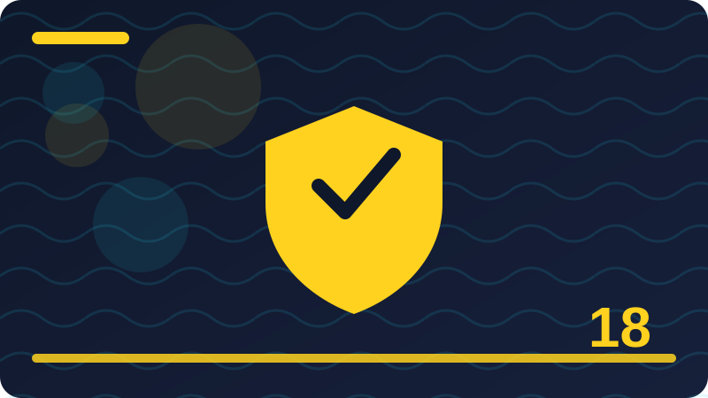

Chapter 18: Secure Messaging and Privacy Basics

Section 1: What Secure Messaging Really Means
Secure messaging means exchanging messages in a way that protects their content from everyone except the intended participants, and it is worth defining precisely, because the phrase is used loosely in advertising. A secure messaging system should encrypt messages in transit, so network observers cannot read them, and ideally encrypt them end-to-end, so even the service provider cannot read them. It should authenticate participants, so you can be reasonably confident you are talking to the right person, and it should protect the conversation's integrity, so tampering is detectable. Those three properties, secrecy, authentication, and integrity, are the core of secure messaging, and a system that offers only one of them is only partly secure. Secure messaging does not mean the conversation is invisible, because metadata such as who messaged whom and when usually remains visible to the provider, and it does not mean the conversation cannot be shared by a recipient, because any recipient can screenshot or quote what you sent. It also does not mean your device is secure, because an unlocked phone or a compromised device exposes messages regardless of how well they travelled. Understanding the definition helps you judge apps: an app that encrypts in transit but not end-to-end is more secure than plain text, but less secure than an end-to-end app, and that difference matters for private conversations. It also helps you set expectations with contacts: you can promise that a message travelled securely, but you cannot promise that it will never be repeated, because that promise depends on people, not technology. In this chapter you will learn to choose messaging tools wisely, to verify contacts, to manage the privacy settings that surround messaging, and to extend the same thinking to broader privacy, from browsers to location to social media. Secure messaging is the starting point, because messages are where most private life happens today, and protecting them well is a foundation for protecting everything else. It is also worth noticing how secure messaging changes your behaviour once you understand it, because understanding tends to make people more deliberate about what they write. A person who knows that a message is end-to-end encrypted still pauses before sending something highly sensitive, because they remember that the recipient, the device, and the backup are all part of the picture. That pause is not a failure of the technology; it is the technology working as intended, by making the boundaries of protection visible. Secure messaging is at its best when it supports good judgement rather than replacing it, and good judgement begins with knowing exactly what is protected and what is not. Try applying that test to your own messaging apps this week: for each app, can you state, in one sentence, what it protects and what it does not? If you cannot, the app's settings and help pages are worth a visit, because a protection you cannot describe is a protection you cannot rely on consciously. That one-sentence test is a small habit with a large payoff, and it turns every messaging choice into a deliberate one. Check: What three properties define secure messaging, and what two things does it not guarantee?
Section 2: Why Ordinary Text Messages Are Not Private
Ordinary text messages, the SMS messages that have existed since the early days of mobile phones, were designed for delivery, not for privacy, and that old design still shapes their weakness today. SMS messages travel through your mobile carrier's systems in a form that the carrier can read, and they are not end-to-end encrypted, which means the carrier, and anyone who can access the carrier's systems, can read them. They can also be intercepted through attacks on the mobile network's signalling systems, which are well documented and difficult for an individual to defend against. SMS is also vulnerable to SIM swapping, where an attacker convinces a carrier to transfer your number to their own SIM card, after which they receive your messages, including verification codes sent by text. That is why security guidance now warns against using SMS for sensitive verification codes where a stronger method, such as an authenticator app, is available. SMS also lacks modern protections like forward secrecy and verified keys, so a message sent years ago remains as readable as it was when sent, if it was stored. None of this means SMS is useless: it is universal, it works on every phone, and it is fine for ordinary, non-sensitive messages, such as confirming a meeting time or telling family you arrived safely. For sensitive matters, such as passwords, financial details, health information, or private conversations, an end-to-end encrypted messaging app is a far better choice. If someone sends you sensitive information by SMS, consider moving the conversation to a secure app, and avoid replying with sensitive details in the same medium. Understanding SMS limits is not about fear; it is about matching the medium to the message, and choosing a stronger channel when the message deserves one. That matching habit is the essence of practical privacy. The weakness of SMS also has a historical explanation that helps you understand why it persists despite its flaws. SMS was built when mobile phones were simple devices and networks were closed systems run by a few trusted carriers, so its designers did not anticipate an internet full of attackers, SIM-swapping fraud, and automated interception. That history is not an excuse for continuing to use it for sensitive matters, but it explains why a universal, simple system remains in place: replacing it everywhere, on every phone and every network, is a slow, coordinated task. In the meantime, the practical answer is coexistence: keep SMS for the ordinary, non-sensitive messages it handles well, and move sensitive conversations to modern encrypted apps. That coexistence is a realistic strategy for a world in transition, and it respects both the universality of SMS and the security of newer tools. When you receive a sensitive request by SMS, treat the medium itself as a reason to switch channels, and suggest the switch politely to the sender, because many people simply do not know the difference. Check: Why is SMS a poor choice for sensitive information, and what should you use instead?
Section 3: End-to-End Messaging Revisited
End-to-end encryption in messaging deserves a second look here, because it is the feature that most distinguishes a secure messaging app from an ordinary one, and its details affect how you use it daily. In an end-to-end encrypted conversation, your message is locked on your device with the recipient's public key, travels as ciphertext through the provider's servers, and is unlocked only on the recipient's device with their private key. The provider cannot read it, cannot hand over a readable copy, and cannot scan its content for advertising, because it never holds the key. That protection applies to text, and in good apps, to photos, voice messages, files, and calls as well, though you should check each app's claims for each type, because some apps encrypt text end-to-end but not backups or certain media. Verification is the companion to encryption: most secure apps let you verify a contact's identity through a safety number, a QR code, or a verification code you compare in person or through a trusted channel, and doing so for sensitive contacts protects you against a provider error or an impersonation attempt. If a contact's key changes, the app may warn you, and that warning can mean a new phone, a reinstalled app, or something suspicious, so it deserves a quick check rather than a dismissal. End-to-end encryption does not protect metadata, device access, screenshots, or backups, as you learned in the previous chapter, and those limits apply here too. The practical routine is therefore: choose an app that offers end-to-end encryption by default, verify keys for contacts you discuss sensitive matters with, check backup settings so backups do not undo the protection, and keep your device locked and updated. End-to-end messaging is a powerful, everyday tool, and using it with its limits in mind makes it genuinely trustworthy rather than merely reassuring. End-to-end messaging also raises a question about trust in the app maker that is worth facing honestly, because even the strongest encryption depends on the app delivering the right keys and the right code. If an app maker were dishonest, or if its app were compromised, it could in theory deliver false keys or weakened code, and users would have difficulty detecting it. That is why verification, independent audits, and open, reviewed implementations matter: they give users reasons to trust beyond the maker's word. For most people, the practical response is not to audit code themselves, which is unrealistic, but to choose apps with a strong reputation, a history of audits, and a transparent approach to flaws, and to verify keys for the most sensitive contacts. Trust in messaging is therefore layered too: trust the mathematics, trust the implementation through audits and reputation, and verify the keys that matter most yourself. That layered trust is honest, because it acknowledges that no single guarantee covers everything, and it gives you concrete steps for each layer. Check: How does end-to-end messaging protect a message, and what should you do when a contact's key changes?
Section 4: Choosing a Messaging App Wisely
Choosing a messaging app is a decision about trust, because you are trusting the app's maker with your conversations' infrastructure, even when the content is encrypted. Start with the encryption question: does the app offer end-to-end encryption by default for all conversations, or only as an optional mode that you and your contact must both enable? Default matters, because optional encryption is often forgotten, and a conversation you thought was protected may not be. Next, ask about the maker's reputation and transparency: does it publish independent security audits, does it explain its encryption in plain language, and does it have a history of responding honestly to flaws? Then ask about metadata: what does the app collect about who you contact and when, how long does it retain it, and does it share it with advertisers or other companies? Then ask about backups: are backups end-to-end encrypted, or do they create a readable copy outside the protected conversation? Then ask about the app's business model, because an app funded by advertising has different incentives from one funded by donations or subscriptions, and those incentives shape how your data is treated. Finally, ask about your contacts: the most secure app is of limited use if the people you need to reach do not use it, so you may need more than one app, using the most secure one for sensitive conversations and a more popular one for everyday chat. You do not need to find a perfect app, because none exists, but you should be able to state why you chose yours, what it protects, and what it does not. That stated reasoning is itself a privacy skill, because it lets you revisit the choice when the app changes its policies or ownership. Choose deliberately, revisit occasionally, and match the app to the sensitivity of the conversation. Choosing an app also involves the people around you, because messaging is a network, and a network's value depends on who else uses it. An app with excellent security but no contacts is a lonely tool, while an app with weaker security but all your family on it is a useful one, and the tension between those truths is real. The sensible resolution is to use more than one app, deliberately: a secure app for sensitive conversations with the contacts who will use it, and a popular app for everyday coordination with everyone else. That division also teaches an important lesson, which is that security choices are not all-or-nothing, and that using a less secure app for a lunch plan does not undermine the secure app you use for a financial discussion. Over time, you can also encourage contacts to adopt the secure app, by explaining its benefits simply and helping them set it up, because networks grow one invitation at a time. Choosing wisely therefore means choosing for your real social life, not for an ideal one, and revisiting the choice as your network changes. Check: What five questions should you ask before trusting a messaging app with private conversations?
Section 5: Verifying a Contact's Identity
Verifying a contact's identity in a messaging app means confirming that the person you are talking to is really who you think they are, and that the encryption keys involved really belong to them. Secure apps make this possible through a verification mechanism, often a safety number, a fingerprint of the keys, or a QR code you can scan when you meet in person. The process is simple in principle: you and your contact each display your verification code, compare them through a trusted channel, such as in person, a phone call to a known number, or a separate trusted medium, and if they match, you mark the contact as verified. Verification protects you against a subtle attack where an impostor substitutes their own keys, so your encrypted messages go to the impostor instead of your contact, while still appearing secure. It also protects you against provider errors and account confusion, where a contact's new device or reinstalled app changes their keys without malice. You do not need to verify every casual contact, because that would be exhausting and unnecessary, but for contacts with whom you discuss sensitive matters, such as finances, health, or work secrets, verification is a worthwhile one-time effort. If verification fails, stop and investigate through another channel before sharing anything sensitive, because a mismatch is information, not an inconvenience. Verification also has a social side: explaining to a contact why you want to verify can feel awkward, but framing it as a normal security step, like checking an ID before a handover, usually makes it comfortable. Over time, verified contacts become a trusted circle, and that circle is the foundation for confident private conversation. Verification turns encryption from a technical promise into a human-confirmed one, and that human confirmation is what makes the promise meaningful. Verification also has a human dimension that technical descriptions often miss, which is that asking to verify can feel like accusing someone of being an impostor. Framing matters enormously here: instead of saying you doubt the contact, say that you verify all sensitive contacts as a routine, like checking an ID before a delivery, and that the routine protects both sides. Most contacts will understand, and some will appreciate learning the feature themselves, turning an awkward request into a shared security habit. If a contact refuses verification, that refusal is itself information, and you can respond by limiting what you share in that conversation, without making an accusation. Verification is therefore as much a social skill as a technical one, and practising its framing, routine, respectful, and mutual, makes it far more likely to happen. A verified circle built with kindness is stronger than one built with suspicion, because it is built on shared understanding rather than on doubt. Check: How does verifying a contact protect you, and when is it worth the effort?
Section 6: Safety Numbers and Key Changes
Safety numbers are the fingerprint of the encryption keys in a conversation, and understanding them helps you respond calmly when an app tells you one has changed. A safety number is a long string of digits, or a QR code representing it, derived from both participants' keys, so it is unique to that pair of people and that set of keys. When you verify a safety number with a contact, you are confirming that your keys match theirs, and that no one has substituted different keys in between. When a safety number changes, it means one side's keys have changed, which usually happens for innocent reasons: the contact got a new phone, reinstalled the app, or restored from a backup that generated new keys. Occasionally, though, a change can indicate an impersonation attempt or a compromised account, and you cannot tell which from the change alone, which is why the app warns you. The right response is a quick check through another channel: ask your contact, in person or by a known phone number, whether they changed phones or reinstalled the app, and if they confirm it, you can accept the new safety number and continue. If they do not confirm it, or if you cannot reach them, do not share sensitive information in that conversation until the discrepancy is resolved. Some apps let you choose whether to be notified of every key change or only to block messages until you approve, and the stricter setting is worth considering for sensitive contacts. Safety numbers may look technical, but they are really a simple idea: a fingerprint you can compare, a change you can question, and a habit of checking that turns a warning into a conversation. Learn to read that warning as a question, not as an alarm, and you will handle key changes with confidence rather than confusion. Safety numbers also illustrate a broader principle about warnings in general, which is that a warning is a question, not a verdict. When an app warns you that a safety number changed, it is not telling you that you are under attack; it is telling you that something changed and asking whether the change is expected. Treating warnings as questions leads to calm checking, while treating them as verdicts leads either to panic or to dismissal, both of which are unhelpful. That principle applies to browser warnings, firewall prompts, and antivirus alerts as well, and learning it in the context of safety numbers gives you a transferable skill. The next time any security tool warns you, pause and ask what changed, whether the change is expected, and how you can check through another channel, because those three questions turn most warnings into manageable investigations. Warnings are conversations, and conversations go better when you listen before reacting. Check: What does a safety number change usually mean, and how should you check whether it is innocent?
Section 7: Disappearing Messages and Their Limits
Disappearing messages are messages that delete themselves after a set time, and they are a useful privacy feature with limits that are important to understand before you rely on them. When you enable disappearing messages in a conversation, new messages are automatically deleted from both participants' devices after the chosen period, such as a day or a week, which reduces the amount of conversation history stored on devices and in backups. That reduction is valuable if a device is later lost, stolen, or inspected, because there is simply less history to expose. The limits, however, are significant: a recipient can screenshot, copy, photograph, or forward a message before it disappears, and no app can prevent a determined recipient from preserving what you sent. Disappearing messages also do not delete copies that may exist in backups made before the timer expired, in notifications that displayed the message, or on linked devices that handle deletion differently. They also do not delete the memory of the conversation from the recipient's mind, which is obvious but worth stating, because people sometimes treat disappearing messages as if they made a conversation unhappen. For those reasons, disappearing messages are best used as a hygiene feature, reducing stored history for ordinary private conversations, rather than as a guarantee for highly sensitive material that must never be preserved. If a message is so sensitive that its preservation would be harmful, consider whether it should be sent in writing at all, or whether a phone call or an in-person conversation would serve better. When you do use disappearing messages, agree the setting with your contact, because a mismatch in expectations, where one person thinks messages vanish and the other has them saved, causes confusion and mistrust. Disappearing messages are a helpful tool for reducing exposure, and like all privacy tools, they work best when their limits are understood and their use is agreed. Disappearing messages also interact with memory and record-keeping in ways that deserve thought, because not every conversation should disappear. Some messages contain information you will need later, such as an address, a booking reference, or an agreement, and letting those disappear automatically can cause confusion or loss. Before enabling disappearing messages in a conversation, consider whether that conversation carries information worth keeping, and if it does, save the important details elsewhere, in a note or a document, before they vanish. That separation, ephemeral chat for discussion and durable notes for facts, is a sensible pattern that keeps both privacy and usefulness. It also prevents the awkward situation where a contact refers to a message that has disappeared from both devices, and neither side can reconstruct what was agreed. Disappearing messages are a tool for reducing history, not a substitute for record-keeping, and using them alongside a habit of saving what matters gives you both privacy and memory. Check: Why can a disappearing message still be preserved, and what is the best use for the feature?
Section 8: Screenshots, Forwarding, and Recipient Trust
Screenshots and forwarding are the two ways a recipient can preserve or spread a message beyond its original conversation, and no messaging technology can prevent them, because they operate at the human and device level. A screenshot captures whatever is on the screen, including a disappearing message, and some apps notify you when a screenshot is taken, but notification is not prevention, and a recipient can also photograph the screen with another device, bypassing notification entirely. Forwarding sends a copy of your message to a third party, sometimes with a label indicating it was forwarded, sometimes without, depending on the app, and once forwarded, the message is outside your control. These realities mean that the ultimate privacy of any message depends on the recipient's trustworthiness and judgement, not only on the app's encryption. That is why the most important messaging privacy decision is often not technical at all, but social: is this person someone I trust with this information, and would I be comfortable if this message were shared more widely? A useful test is to imagine the message appearing in a context you did not intend, and to ask whether the harm would be acceptable, because that imagination disciplines what you send. For sensitive matters, consider whether a message is the right medium at all, or whether a call, which leaves no easily forwardable text, would be better. You can also reduce risk by sending less detail in writing, by splitting sensitive information across channels, or by agreeing explicitly with a contact that a conversation is private, though agreements depend on goodwill. Technology can protect a message in transit and at rest, but it cannot protect it from the person it was sent to, and accepting that boundary honestly is what lets you use messaging wisely. Trust the person first, and let the technology protect the journey second. Recipient trust also extends to the devices recipients use, because a trustworthy person with an insecure device can still expose your messages. A friend who leaves their phone unlocked, who shares it freely with others, or who has not updated it in years may expose your conversation without any intention to do so, simply through carelessness or a compromised device. That does not mean you should distrust your friends, but it does mean that highly sensitive information deserves extra consideration about the channel, even with trusted recipients. For the most sensitive matters, a phone call, which leaves no text on a device, or an in-person conversation, which leaves no digital trace at all, may be wiser than a message, however secure the app. Thinking about recipients' devices, as well as recipients' intentions, adds a layer of realism to your privacy judgement, because exposure is often accidental rather than malicious. Trust the person, consider their device, and choose the channel accordingly, and your most sensitive conversations will be protected by judgement as well as by technology. Check: Why can't any app prevent screenshots or forwarding, and what decision matters more than the app you choose?
Section 9: Group Chats and Their Privacy Risks
Group chats multiply both the convenience and the privacy risks of messaging, because every member is an endpoint, a potential forwarder, and a person whose device security affects the whole group. A message sent to a group of twenty people is, in practical terms, a message sent to twenty devices, twenty backup settings, twenty screenshot possibilities, and twenty judgements about forwarding, and the group's privacy is only as strong as its least careful member. End-to-end encryption in a group still protects the messages from outsiders and from the provider, but it does not protect them from members, and a single member who adds an outsider, screenshots liberally, or uses an insecure device can expose the whole conversation. Group settings deserve attention: who can add members, whether new members can see past messages, and whether the group is discoverable by strangers, because each setting shapes who can enter and what they can see. For sensitive topics, smaller groups are safer than larger ones, not because large groups are bad, but because each additional member adds risk, and a group that grows casually can soon include people you would not have chosen for a sensitive conversation. It is also worth periodically reviewing your groups, leaving ones you no longer need, and checking the member list of groups where sensitive matters are discussed, because membership drifts over time as people are added for convenience. If a group discussion turns sensitive unexpectedly, consider moving it to a smaller group or a one-to-one conversation, rather than continuing in a large, casual space. Group chats are wonderful for coordination and community, and they deserve privacy habits proportionate to their size: the larger the group, the more careful you should be about what you share, and the more regularly you should review who is in it. Privacy in groups is a shared responsibility, and a moment's review protects everyone in the group. Group privacy also depends on the group's culture, not only on its settings, because a group that treats forwarding casually will spread messages widely regardless of its technical configuration. A group where members agree, explicitly or implicitly, that what is shared in the group stays in the group is far more private than a group with strict settings but a casual sharing culture, and that culture is built through conversation and example. If you start a group for a sensitive purpose, stating the expectation early, simply and without drama, helps set that culture, and modelling it yourself, by not forwarding group messages elsewhere, reinforces it. Culture is harder to build than settings, but it is more durable, because it travels with members to new groups and new apps. When you join a group, observe its culture before sharing sensitively: do members forward freely, do they add strangers casually, do they respect confidences? Those observations tell you more about the group's real privacy than its settings page ever will, and they should guide what you share there. Check: Why is a group chat's privacy only as strong as its least careful member?
Section 10: Metadata in Messaging: The Invisible Trail
Metadata in messaging is the trail of information about your conversations that remains even when the messages themselves are encrypted, and it deserves attention because it can reveal a great deal on its own. Metadata includes who you messaged, when, how often, how long the messages were, whether they were read, and sometimes your approximate location, and providers and network observers can often see much of it even for end-to-end encrypted conversations. A pattern of metadata can tell a story: frequent late-night messages to a particular contact, a sudden burst of messages to a new contact, or a conversation that stops abruptly, and those stories can be sensitive even when the words are hidden. Different apps collect and retain different amounts of metadata, and their policies on retention and sharing vary widely, which is why comparing apps on metadata, not just on content encryption, is a valuable habit. You can reduce metadata exposure in modest ways: prefer apps that minimise metadata collection and retention, review your app's privacy settings, avoid unnecessary location sharing in messages, and remember that read receipts and online status are themselves metadata that reveal your habits. Stronger metadata protection, through specialised tools, involves trade-offs in convenience and is beyond what most people need, but awareness of the trail is useful for everyone. When you judge a messaging app, ask not only whether it encrypts content, but what it learns about your conversations, how long it keeps that knowledge, and with whom it shares it, because those answers describe the app's real privacy, not just its encryption. Metadata is the invisible trail of your social life, and knowing it exists is the first step to managing it wisely, even if you cannot erase it entirely. Metadata awareness also applies to your own behaviour as a sender, because the pattern of your messaging is partly under your control. Sending a burst of messages late at night, messaging a new contact intensively, or suddenly going silent all create patterns that observers can read, even without content, and being aware of those patterns lets you decide whether they matter. For most everyday messaging, patterns are harmless, because they simply reflect a normal social life, and worrying about every pattern would be exhausting and unnecessary. For sensitive situations, however, such as contacting a source, a lawyer, or a support service, pattern awareness matters, and varying timing, using a separate channel, or simply being mindful of frequency can reduce the pattern's clarity. That awareness is not paranoia; it is the same discretion that leads people to make sensitive calls from a private place rather than a crowded room. Metadata is the shape of your communication, and shaping it deliberately, when the stakes warrant it, is a quiet form of privacy that costs little and protects much. Check: What can messaging metadata reveal even when message content is fully encrypted?
Section 11: Backups and Messaging Privacy
Backups are the quiet undo button for messaging privacy, because a conversation that is end-to-end encrypted in the app can become readable in a backup if the backup itself is not end-to-end encrypted. Many messaging apps offer to back up your conversations to a cloud service, so you can restore them on a new phone, but the backup's encryption depends on the app and the service: some backups are encrypted with a key the provider holds, which means the provider can read them, while others offer end-to-end encrypted backups, where only you hold the key. If you use the first kind, your messages are protected in the app but readable in the backup, and a breach of the backup service, or a lawful demand to the provider, could expose them. The fix is to check your backup settings deliberately: look for an option for end-to-end encrypted backup, turn it on if it is offered, and store its passphrase or key safely, because losing it can mean losing the backup. Also consider whether you need cloud backup for messaging at all: if your conversations are highly sensitive, you might prefer local backup, or no backup, accepting that a lost phone means lost history, in exchange for stronger privacy. Backups also interact with disappearing messages, because a backup made before a message disappeared may preserve it, so a disappearing-message habit is weakened by an unencrypted, frequent backup. The practical routine is a backup check done alongside your messaging setup: open the backup settings, note whether backup is on, whether it is end-to-end encrypted, and where the key is stored, and then decide consciously. A backup is a copy, and every copy deserves the same protection as the original, because a copy in a weaker place is a weaker link in the whole chain. Checking backups is a small habit that prevents a large, silent privacy loss. Backup settings also deserve a place in your device-setup routine, because a new phone or a reinstalled app often restores old backup settings without asking, and a privacy choice you made on an old device may not carry over. When you set up a new device, walk through the backup settings for your messaging apps before you restore, confirming whether backup is on, whether it is end-to-end encrypted, and where its key is stored. That walkthrough takes only a few minutes, but it prevents the common surprise of discovering, months later, that a new phone has been backing up conversations insecurely since day one. It also gives you a natural moment to reconsider whether you need cloud backup for messaging at all, or whether a local backup, or no backup, fits your current needs better. Setup moments are powerful because they set defaults that persist for years, and treating backup settings as part of setup, rather than as an afterthought, ensures those defaults reflect your choices. A new device is a new beginning for privacy, and beginning deliberately is far easier than correcting drift later. Check: How can a cloud backup undo end-to-end messaging encryption, and what setting fixes it?
Section 12: Locking Down Your Messaging Apps
Locking down a messaging app means adding protections at the app level, beyond the phone's lock screen, so that a borrowed phone, a curious child, or a thief with an unlocked moment cannot open your conversations. Many messaging apps offer an app lock, which requires a fingerprint, face, or PIN to open the app, even when the phone itself is unlocked, and turning it on is a simple, high-value step. Some apps also let you hide message previews in notifications, so that a notification on a locked screen does not display the message content to anyone glancing at your phone, and that setting is worth enabling for private conversations. Linked devices deserve attention too: if your messaging app is linked to a computer or a tablet, those devices can read your messages, and you should review the linked-device list regularly, removing devices you no longer use or recognise. Screen lock timing on your phone complements app locks, because a short auto-lock returns the phone to its protected state quickly after you set it down. It is also worth reviewing which apps can access your messages, contacts, or notifications, because a third-party app with notification access can read message previews, even if the messaging app itself is locked. The goal is not paranoia, but proportion: a phone is a shared object in daily life, handed to show a photo, left on a table, or used by a child for a game, and app-level locks ensure that those everyday sharings do not become exposures. Turn on the app lock, hide notification previews for sensitive apps, review linked devices monthly, and keep your phone's auto-lock short, and your conversations will be guarded by several small locks instead of one. Those small locks, kept consistently, are what make a phone feel private in a shared world. App locks also protect you in a specific, everyday scenario that is easy to overlook, which is the moment you hand your phone to someone to show a photo or a video. That person may swipe, intentionally or accidentally, into your messages, your photos, or your other apps, and an app lock ensures that a swipe into a messaging app meets a fingerprint or PIN rather than your private conversations. That protection is not about distrusting the person you handed the phone to; it is about designing for the reality that phones are shared objects and that swipes happen. App locks also protect against a child who picks up your phone and explores, a colleague who borrows it to make a call, or a stranger who finds it briefly unattended. Those everyday sharings are far more common than theft, and they are the scenarios where app locks earn their keep daily. Turning on an app lock is therefore a habit for normal life, not for emergencies, and its value is measured in the many small moments it guards quietly, without you ever noticing. Check: What four app-level protections help keep your messages private on a shared or borrowed phone?
Section 13: Sharing Your Location Safely
Sharing your location through a messaging app is convenient, but it is also one of the most sensitive things you can share, because location reveals where you are, where you live, where you work, and where your children go to school. Live location sharing, which updates continuously for a set period, is useful for meeting a friend or letting family know you arrived safely, but it should be used deliberately, for a short period, with a specific person, and stopped when its purpose ends. A single location pin, sent once, is less revealing than live sharing, because it shows one place at one time, rather than a trail, and it is often sufficient for the purpose. Photos also carry location, because many phones embed GPS coordinates in photo metadata, which you will learn about in a later section, so sending a photo can share your location even when you did not intend to. Before sharing location, ask whether the recipient genuinely needs it, whether a vaguer description, such as a neighbourhood or a landmark, would serve, and whether the sharing will stop automatically or needs you to remember to stop it. Check your messaging app's location settings, and your phone's location permissions, so that location is shared only when you choose, not by default. For children, location sharing deserves a family conversation, because a child's live location is highly sensitive, and the decision to share it should involve an adult and a clear purpose. Location is powerful information, and sharing it is sometimes necessary and often kind, but it should always be a choice, limited in time, limited in audience, and stopped when done. That discipline turns a useful feature into a safe one. Location sharing also has a safety dimension that cuts in the opposite direction, because sharing location can protect you in some situations, such as letting family track your journey home late at night, or letting a friend know you arrived safely. That protective use is legitimate and valuable, and it should not be dismissed in the name of privacy, because safety and privacy are both important and sometimes point in different directions. The art is to share location for safety deliberately, with a trusted person, for a limited time, and to stop sharing when the journey ends, rather than sharing continuously by default. That pattern, purposeful, limited, and stopped, gives you safety without permanent exposure, and it respects both values at once. Discuss location sharing with the people you share with, so they understand when you are sharing and why, and so they do not expect continuous sharing as a norm. Location is a tool for both safety and privacy, and using it purposefully, rather than by default, serves both. Check: Why is live location sharing more sensitive than sending a single location pin?
Section 14: Voice and Video Call Privacy
Voice and video calls through messaging apps carry the same privacy questions as text messages, plus a few of their own, because calls reveal your voice, your face, and your surroundings in real time. A secure calling app should encrypt calls end-to-end, so that neither the provider nor a network observer can listen in, and you should check that your app offers this for calls as well as for text, because some apps encrypt one but not the other. Calls also reveal metadata, such as who called whom, when, and for how long, and that metadata is visible to the provider even when the call content is encrypted. Video calls add visual exposure: your background can reveal your home, your workplace, or documents on your desk, so choosing a neutral background, or a blur feature where offered, is a sensible habit for sensitive calls. Be careful about calls from unknown numbers or accounts, because voice scams, where a caller impersonates a bank, a relative, or an authority, are common, and a secure app does not make an unknown caller trustworthy. If a call feels suspicious, hang up and contact the organisation through a known number, rather than continuing the conversation. Recording calls raises its own questions: in many places, recording requires consent, and secretly recording a call can damage trust and break rules, so agree recording openly where it is needed. For group calls, remember that every participant is an endpoint, and that a participant could record or share the call without your knowledge, so the same caution that applies to group chats applies to group calls. Calls feel more private than text because they vanish when they end, but they leave metadata, memories, and possibly recordings behind, and treating them with the same care as written messages keeps that feeling honest. Choose encrypted calling, guard your background, verify unknown callers, and agree recording openly. Call privacy also includes the question of who else can hear you, because a call is not only a digital transmission but a physical sound in a room. A sensitive call taken on speakerphone in a shared office, a public transport carriage, or a family living room exposes its content to everyone nearby, regardless of how well the app encrypts it. Choosing a private place for sensitive calls, using earphones, and keeping your voice low are physical privacy habits that complement digital encryption, and they are easy to forget when a call arrives unexpectedly. If a sensitive call arrives at an inconvenient moment, it is perfectly acceptable to say you will call back from a private place, because that brief delay protects the conversation far more than any app setting. Physical surroundings are part of call privacy, and treating them as such, by moving, by lowering your voice, or by postponing, is a habit that costs little and protects much. Encryption guards the wire; you must guard the room. Check: What privacy risks do video calls carry that text messages do not?
Section 15: Photos and Hidden Location Data
Photos carry hidden data, called metadata or EXIF data, that can reveal far more than the image itself, and understanding it is essential before sharing photos widely. When you take a photo with a phone, the file often records the date and time, the device model, and, if location services were on, the GPS coordinates where the photo was taken, sometimes precisely enough to identify a home address. Sharing that photo through a messaging app or social media may preserve that metadata, depending on the platform, so a photo of your child at home, or of a new purchase in your living room, could reveal your home's location to anyone who receives it and knows how to read the metadata. Some platforms strip metadata automatically when you upload, which is helpful, but you should not rely on that stripping without checking, because it varies by platform and by sharing method. Your phone's settings let you control whether location is recorded in photos at all, and turning that off, or removing metadata before sharing sensitive photos, is a sensible habit. There are simple tools and settings for stripping metadata, and many phones offer to share a photo without location when you use the share sheet. The habit to build is a pause before sharing a photo: does this photo reveal a location I would not want shared, does it show a child, a document, or a background detail that matters, and would a cropped or location-stripped version serve just as well? Photos are a joyful part of messaging, and they need not become a source of worry, but a moment's check before sending protects the privacy that the image itself cannot. Hidden data is still data, and treating it as part of the photo, rather than as an invisible extra, is the key to sharing photos safely. Photo metadata also includes details beyond location that are worth knowing, because a photo can reveal the device that took it, the software that edited it, and the date and time it was taken, all of which can be pieced together into a story. A photo's timestamp can reveal when you were at a place, its device model can reveal what phone you own, and its editing history can reveal what tools you used, and while each detail alone is minor, together they add up. Stripping metadata before wide sharing removes all of these details at once, which is why a stripping habit is more thorough than merely turning off location. Many sharing tools offer a strip option, and using it for photos shared publicly, while keeping originals privately for yourself, gives you both a clean public copy and a complete private archive. That separation, original for yourself and stripped for sharing, is a simple pattern that protects privacy without losing information you may want later. Make stripping a step in your sharing routine, and hidden data will stop being a hidden risk. Check: What hidden data can a phone photo contain, and how can you prevent it from revealing your home address?
Section 16: Sharing Files Through Messages
Sharing files through messaging apps is convenient, but files carry their own privacy and security considerations beyond the message text that accompanies them. A document may contain tracked changes, comments, or metadata revealing the author, the editing history, or the organisation, and a photo may contain location data, as you just learned, so reviewing a file before sending it is a worthwhile habit. Files also persist differently from messages: a recipient can save, forward, and back up a file independently of the conversation, so a file shared in a disappearing-message conversation may outlive the messages around it. Sensitive files, such as identity documents, financial statements, or medical records, deserve extra care: consider whether a messaging app is the right channel at all, or whether a secure file-sharing service with access controls and expiry would serve better. If you must send a sensitive file by message, consider encrypting the file itself with a passphrase shared separately, so that the file is protected even if the conversation is later exposed. Also check the file's size and type, because some apps compress photos and videos, reducing quality, while others send originals, and that choice affects both quality and metadata. Be careful with files from strangers, because a file can carry malware, and a messaging app's encryption does not make an attachment safe to open, so scan attachments with antivirus and avoid opening unexpected files. The routine for file sharing is therefore: review the file's content and metadata, choose the right channel for its sensitivity, protect it separately if it is highly sensitive, and confirm the recipient received it before deleting your copy. Files are messages with a longer life, and treating them with that longer life in mind keeps file sharing both convenient and safe. File sharing also involves version history, because a document that has been edited many times may carry earlier drafts, deleted paragraphs, or comments that you did not intend to share. A document sent as an editable file can reveal its revision history to a recipient who knows where to look, while a document sent as a flat, exported copy, such as a PDF, usually carries far less history. Before sharing a sensitive document, consider exporting it to a format that strips history, or reviewing its properties for tracked changes and comments, because those hidden layers are the document equivalent of photo metadata. That review takes only a moment, but it prevents the embarrassment and risk of sharing a draft comment, a deleted paragraph, or an earlier version that contradicts the final one. Files, like photos, carry more than their visible content, and reviewing the invisible layers before sharing is a habit that protects both privacy and professionalism. Share the final version, not the history behind it. Check: Why does a file shared in a disappearing-message conversation need extra care?
Section 17: Messages From Strangers: Staying Safe
Messages from strangers are a normal part of modern messaging, because apps make it easy for anyone to contact you, but they deserve a cautious approach, because strangers can be friendly, mistaken, or malicious, and you cannot tell which from a first message alone. A stranger's message may be a genuine wrong number, a marketing attempt, a social engineering trick, or the opening of a scam, and the safe response is the same in all cases: do not share personal information, do not click links, and do not continue a conversation that feels pressuring or suspicious. Be especially careful with messages that claim urgency, authority, or a prize, because those are classic manipulation tactics, and with messages that ask you to move to another app or platform, because that move often escapes the first app's protections. If a stranger sends you an attachment, do not open it, because attachments from unknown senders are a common malware route, and if a stranger asks for a code, a password, or a payment, refuse and report the conversation. Most messaging apps let you block and report strangers, and using those tools protects both you and other users, because reports help the provider identify patterns. You can also adjust your privacy settings so that strangers cannot see your profile photo, your online status, or your phone number, which reduces the information available to someone who finds you. It is not rude to ignore or block a stranger's message; it is a normal boundary in a world where anyone can reach you, and setting that boundary early prevents many problems. If a stranger's message worries you, show it to a trusted person before acting, because a second opinion often reveals a scam that urgency hid. Strangers deserve politeness, but they do not deserve your trust, your data, or your clicks, and keeping those separate is a simple, powerful habit. Stranger messages also include a category that is easy to misjudge, which is the message from someone who seems to know you, because they mention a real detail about your life, your workplace, or your recent activity. That detail may have come from your public profile, from a mutual group, or from a data breach, and its presence does not prove the sender is trustworthy; it proves only that the detail is available somewhere. Scammers routinely use such details to build false familiarity, hoping that recognition will lower your guard, and the defence is to treat familiarity as a question, not as proof. Ask yourself how the sender could know that detail, whether it is publicly available, and whether the sender's request still makes sense without the detail, because a legitimate contact's request will stand on its own, while a scammer's request often depends on the false familiarity. If a message from a seeming acquaintance asks for money, codes, or secrecy, verify through a known channel before acting, because a real acquaintance will understand the verification, while a scammer will resist it. Familiarity is information, not trust, and keeping that distinction clear protects you from one of the most effective tricks in messaging scams. Check: What should you never do in response to a first message from a stranger?
Section 18: Scams Inside Messaging Apps
Scams inside messaging apps are common because messaging feels personal and trusted, and scammers exploit that feeling with stories designed to bypass your scepticism. Common patterns include impersonation, where a scammer pretends to be a friend, a relative, or a company, often using a stolen profile photo and a plausible story about an emergency or a payment; investment scams, where a stranger promises guaranteed returns and urges you to invest quickly; romance scams, where a new online friend builds trust over weeks and then asks for money; and job scams, where a message offers easy work for good pay but requires an upfront fee or personal details. The defences are consistent across all patterns: pause before acting, verify through a separate channel, such as calling the friend on a known number, be suspicious of urgency and secrecy, never send money or codes to someone you met through a message, and report and block the scammer. Scammers often move conversations to a less protected channel, or ask you to keep the conversation secret from family, because secrecy prevents the second opinion that would expose them, so a request for secrecy is itself a warning sign. If you have already sent money or information, act quickly: contact your bank, change passwords, report to the platform and to local authorities, and tell a trusted person, because early action limits damage and shame only helps the scammer. Messaging apps are also used for legitimate contact from businesses, so the skill is not to distrust every message, but to verify the surprising ones, especially those involving money, codes, or urgency. A message that makes you feel rushed, flattered, or afraid deserves a pause, because those feelings are the scammer's tools, and a pause restores your judgement. Learn the patterns, practise the pause, and report what you find, because reporting protects the next person the scammer would have targeted. Messaging scams also evolve quickly, because scammers adapt their stories to current events, popular apps, and recent news, so a pattern you learned last year may appear in a new costume this year. A scam that once pretended to be a bank may now pretend to be a delivery service, a streaming platform, or a government programme, but its structure remains the same: urgency, authority or familiarity, a request for money or information, and pressure to act without verification. Learning the structure, rather than memorising specific stories, protects you against new costumes, because you will recognise the shape even when the details change. That structural awareness is also what makes reporting valuable, because your report helps providers and authorities see the new costume early and warn others. Staying aware of scam structure, rather than chasing every new story, is a sustainable defence, and it pairs well with the pause habit, because a pause gives you time to recognise the structure before you act. Scams change their clothes; they rarely change their shape, and knowing the shape is knowing the scam. Check: Name three common messaging scam patterns and the verification step that counters each one.
Section 19: Privacy Settings Walkthrough for Messaging
Privacy settings in messaging apps are worth a deliberate walkthrough, because their defaults are often more open than most people would choose, and a few minutes of adjustment can greatly reduce your exposure. Start with who can contact you: many apps let you choose whether strangers can message you directly, or whether their messages go to a requests folder you can review, and the requests option is usually the safer choice. Next, check who can see your profile: your photo, your about text, your phone number, and your online status can each be set to everyone, contacts only, or nobody, and contacts only is a sensible default for most people. Next, check read receipts and typing indicators, which reveal when you have read a message and when you are typing, and decide whether you want to share that information, because it creates social pressure as well as a metadata trail. Next, check group settings: who can add you to a group, and whether groups you join are discoverable, because an open group setting lets strangers add you to groups you never chose. Next, check linked devices and active sessions, removing any you do not recognise, and check backup settings, as you learned earlier. Next, check location sharing defaults, ensuring location is shared only when you choose, not automatically. Work through these settings on each messaging app you use, because settings do not transfer between apps, and a setting you fixed in one app may still be open in another. Write down what you changed, or take screenshots for your own reference, so you can check again after an app update, which sometimes resets settings. A privacy walkthrough is not a one-time chore, but a periodic habit, and doing it with a friend or family member makes it faster and more thorough. Your settings are the fences around your messaging life, and walking them occasionally keeps them in repair. Privacy settings also change over time, because apps add new features, new defaults, and new settings with each update, and a setting you configured last year may have been joined by a new setting you have never seen. That is why a walkthrough should be repeated, not merely done once, and why update notes are worth a glance, because they often announce a new privacy-relevant feature or a changed default. A new feature that shares your status, your location, or your contacts by default can quietly undo a privacy choice you made carefully, and only a repeated walkthrough will catch it. Treating privacy settings as a living list, reviewed after major updates, is therefore more realistic than treating them as a one-time setup, and it prevents the slow drift that otherwise erodes privacy silently. Schedule a brief walkthrough after each major app update, or at least twice a year, and your settings will reflect your current choices rather than an accumulation of forgotten defaults. Check: What six areas should a messaging privacy walkthrough cover?
Section 20: Blocking, Reporting, and Leaving Conversations
Blocking, reporting, and leaving are the tools that let you control who can reach you and which conversations you remain part of, and using them confidently is a privacy skill, not a rude act. Blocking someone stops them from messaging or calling you, and in most apps, it also hides your profile information from them, which is a clean break that protects you from further contact. Reporting someone sends information about the conversation to the provider, helping it identify scams, harassment, and abuse, and reporting is most useful when done promptly, with the offending messages still visible. Leaving a group removes you from its future messages, and in most apps, it also stops new messages from that group reaching you, though past messages may remain on other members' devices. You should use these tools without guilt when a conversation becomes harassing, scammy, or simply unwelcome, because your attention and your safety are yours to protect, and no social obligation requires you to remain reachable to someone who harms you. It is also worth knowing what blocking does not do: it does not delete messages the person already received, it does not prevent them from contacting you through another app or number, and it does not erase a conversation from the other person's device. For persistent harassment, keep evidence, such as screenshots, report through the app and, if needed, to local authorities, and tell a trusted person, because harassment is easier to face with support. For groups, leaving quietly is often the simplest option, and you do not owe a group an explanation for leaving, though a brief, polite note can preserve relationships where you want to. Blocking, reporting, and leaving are boundaries, and boundaries are healthy: they let you choose who shares your attention, and they protect the conversations you value by removing the ones you do not. Blocking and leaving also have a social aftermath worth preparing for, because a blocked person may notice, a left group may ask why, and those reactions can be uncomfortable even when the decision was right. Preparing a brief, calm explanation, such as that you are reducing your messaging load or focusing on a smaller circle, can ease the aftermath without requiring you to justify a boundary that needs no justification. You do not owe a detailed explanation, and a short, polite note is usually enough, but having one ready prevents an awkward moment from turning into a reversal of a good decision. Boundaries are easier to keep when you have rehearsed how to state them, and that rehearsal is a small piece of social preparation that supports a technical action. If a blocked person reacts with harassment through another channel, that reaction confirms the decision rather than undermining it, and it is a reason to document, report, and seek support, not to unblock. Boundaries protect you, and preparing for their aftermath protects the boundaries themselves. Check: What does blocking stop, and what two things does it not undo?
Section 21: Your Profile and What It Reveals
Your messaging and social profile reveals more than you may realise, because each field, each photo, and each status line is a piece of information that strangers, advertisers, and scammers can collect and combine. A profile photo can reveal your appearance, your location, or your family, especially if it shows a child, a workplace, or a recognisable place. An about text that mentions your job, your school, or your city narrows down who you are, and a phone number displayed publicly lets anyone contact you or look you up elsewhere. Your online status and last-seen time reveal your habits, such as when you are awake, when you work, and when you are likely away from home, and that rhythm can be sensitive. Even your choice of username can reveal information, if it includes your real name, your birth year, or a handle you use elsewhere, because handles link your identities across platforms. The sensible approach is to review your profile as a stranger would: open it as if you did not know yourself, list everything it reveals, and ask whether each item needs to be public, contacts-only, or removed. Set your photo to contacts-only if you prefer, keep your about text general, hide your phone number where the app allows, and consider whether your last-seen time should be visible at all. For children, profile review deserves adult involvement, because children may not recognise what a photo or a status reveals. Your profile is your public face in a messaging world, and choosing what it shows is a privacy decision, not a vanity one. A profile that reveals little to strangers, while remaining warm and recognisable to friends, is the ideal balance, and it is achievable with a few minutes of review and a willingness to remove details that do not need to be public. Profiles also change over time, because a photo that was appropriate last year may reveal a new workplace, a new home, or a new family member today, and a status that was harmless when written may become sensitive as circumstances change. Reviewing your profile periodically, with fresh eyes and current circumstances in mind, catches those changes, and it is a habit that pairs naturally with your twice-yearly checkup. Ask yourself, for each profile element, whether it still needs to be visible, whether its audience is still right, and whether it reveals something you would not share with a stranger today. That review often surfaces small items, such as an old workplace in a bio, or a photo background that now shows a new address, that are easy to fix once noticed. Profiles are living documents, and treating them as such, rather than as a one-time setup, keeps your public face aligned with your current life. A profile reviewed twice a year is a profile that stays yours, rather than becoming a museum of past disclosures. Check: If you viewed your own profile as a stranger, what five things might it reveal?
Section 22: Online Status, Last Seen, and Read Receipts
Online status, last-seen times, and read receipts are small features with large social and privacy effects, because they reveal your behaviour in real time and create expectations about your availability. Online status tells contacts when you are using the app, last-seen tells them when you last used it, and read receipts tell a sender when you have read their message, often with a double tick or a colour change. Together, these features create a detailed picture of your day: when you wake, when you work, when you are free, and when you are ignoring someone, and that picture can be used for social pressure, stalking, or simply unwanted attention. Many apps let you control these features, hiding your last-seen from everyone or from strangers, turning off read receipts, or choosing who can see your online status, and adjusting them is a legitimate privacy choice, not a sign of rudeness. Turning off read receipts also usually means you cannot see others' receipts, which is a fair trade that many people accept gladly. The social side deserves honesty: if you hide your status, some contacts may notice and ask why, and a simple explanation, that you prefer not to broadcast your availability, is usually accepted. For safety, hiding last-seen and online status from strangers is a strong default, because strangers have no legitimate need to track your habits, while contacts may be given more visibility if you choose. Children and teenagers are especially affected by read receipts, because they create pressure to reply instantly, and turning them off can reduce anxiety as well as exposure. These features are conveniences that trade privacy for immediacy, and the right balance is personal, but it should be a choice you make deliberately, not a default you never examined. Review them, choose what fits your life, and revisit the choice if your circumstances change. Status features also affect your relationships, because they create expectations about responsiveness that can strain friendships and work relationships alike. A contact who sees you online may expect an immediate reply, and a sender who sees a read receipt may feel ignored if you do not reply quickly, even though you may be busy, resting, or simply thinking. Those expectations are a social cost of visibility features, and turning them off is not only a privacy choice but a wellbeing choice, because it restores your control over when you respond. If you turn off read receipts or last-seen, explain the choice simply to close contacts, framing it as a preference for less pressure rather than as secrecy, and most people will understand. That conversation also models a healthy boundary for others, who may feel the same pressure but have not considered changing their settings. Visibility features are conveniences that trade your time and attention for immediacy, and choosing less visibility is choosing more control over both. Your availability is yours to share, not a feature to broadcast by default. Check: What do online status, last-seen, and read receipts reveal, and what trade-off comes with turning read receipts off?
Section 23: Privacy Versus Convenience
Privacy and convenience are often in tension, because the most convenient option is usually the one that shares the most data, remembers the most, and asks the fewest questions. A messaging app that syncs all your contacts, backs up everything to the cloud, and shows your status to everyone is convenient, but it is also exposed, while a more private setup requires a few extra steps, a few more decisions, and a little more friction. The goal is not to choose privacy at all costs, because a system so inconvenient that you abandon it protects nothing, but to find a balance where the protections you keep are the ones that matter most to you, and the conveniences you give up are the ones you can live without. Start by identifying your most sensitive areas, such as financial conversations, family photos, or work secrets, and protect those strongly, even at some cost in convenience, while accepting more convenience for low-sensitivity areas, such as casual group chat about a hobby. That risk-based balance is more sustainable than a blanket rule, because it focuses effort where harm would be greatest. It is also worth noticing that convenience itself can be a privacy risk: a feature that saves you a tap, such as automatic contact syncing, may also share your entire address book with a provider, and asking what a convenience costs in data is a useful habit. Over time, as private tools improve, the tension lessens, because better design can offer both, such as end-to-end encrypted backups that are also automatic, but until then, deliberate trade-offs are necessary. Make those trade-offs consciously, write down what you chose and why, and revisit them when your life changes, because a balance that suited you as a student may not suit you as a parent or a professional. Privacy versus convenience is not a battle to win once, but a balance to tend, and tending it thoughtfully is the heart of practical privacy. The privacy-convenience balance also shifts with life stages, because a student, a parent, a professional, and a retiree face different risks and value different conveniences. A student may prioritise connecting with many people, a parent may prioritise children's safety, a professional may prioritise separating work and personal life, and a retiree may prioritise simplicity and protection from scams. Those different priorities lead to different balances, and none is universally right, which is why a personal balance, revisited as life changes, is better than a universal rule. When your life stage changes, through a new job, a new child, a move, or a new relationship, revisit your privacy balance deliberately, because the old balance was fitted to an old life. That revisiting is a natural moment to walk through settings, close old accounts, and update your checklist, turning a life change into a privacy refresh. Privacy is personal, and personal means fitted to your life, not to someone else's. Check: How can a risk-based balance between privacy and convenience be more sustainable than a blanket rule?
Section 24: Tracking and Advertising Privacy
Tracking for advertising is the system by which companies observe your online behaviour, build a profile of your interests, and show you advertisements tailored to that profile, and understanding it is essential for privacy in general. Tracking happens through cookies, through identifiers in apps, through pixels embedded in pages and emails, and through data shared between companies, and it can follow you across websites and apps, building a picture that is often more detailed than you would guess. That picture may include your age, your location, your interests, your health concerns, and your shopping habits, inferred from pages you visited, searches you made, and videos you watched. The harm is not only that advertisements feel intrusive, though they do, but that detailed profiles can be used for price discrimination, for manipulative targeting, and, if breached or sold, for fraud and impersonation. You can reduce tracking in several practical ways: use your browser's tracking protection, decline non-essential cookies where you are given a choice, review app tracking permissions on your phone, and consider a browser or extension that blocks known trackers, from a reputable maker. You can also review the advertising settings of major platforms, where you can often see and delete interests assigned to you, and opt out of personalised advertising, though opting out usually means less tailored advertisements rather than no advertisements at all. Tracking is a business model, not a law of nature, and your choices as a user, combined with regulation and better tools, shape how much of it you experience. You need not eliminate all tracking to gain meaningful privacy; reducing it, understanding it, and choosing services that minimise it are all valuable steps. Privacy from tracking is a spectrum, and moving along it in the direction of less exposure is worthwhile, even if perfection is out of reach. Tracking also has a collective dimension, because your tracking data does not only affect you; it feeds profiles that affect prices, opportunities, and information shown to people like you. When tracking data is used to decide what news, what jobs, or what prices a group of people sees, the harm extends beyond individual annoyance to collective shaping, and that shaping is harder to see and harder to resist alone. That collective view is a reason to support privacy tools and regulations that limit tracking for everyone, not only to protect yourself, but to protect the information environment you share with others. It is also a reason to choose services that minimise tracking, because each user's choice signals to the market that tracking-minimal services are valued. Individual privacy actions, multiplied across many people, become a collective signal, and that signal shapes what services are built. Your tracking choices are therefore both personal and civic, and recognising that dimension adds weight to habits that might otherwise feel small. Check: How does advertising tracking build a profile of you, and what are three ways to reduce it?
Section 25: Cookies in Plain Words
Cookies are small files that websites store on your device to remember information between visits, and they are both useful and, in some forms, a privacy concern, so distinguishing their kinds matters. First-party cookies are set by the site you are visiting, and they remember useful things like your sign-in, your language preference, or the contents of a shopping basket, without which the web would be far less usable. Third-party cookies are set by other domains embedded in the site, such as advertisers or analytics providers, and they can track you across many different sites, building the advertising profile you learned about in the previous section. Session cookies last only until you close your browser, while persistent cookies remain for a set period, and both kinds can be first-party or third-party. Your browser lets you control cookies: you can block third-party cookies, clear cookies when you close the browser, or allow cookies only from sites you trust, and blocking third-party cookies is a sensible default that preserves most useful functionality while reducing cross-site tracking. Cookie consent banners, which ask you to accept or reject cookies, are worth reading rather than dismissing, because rejecting non-essential cookies is often an option, even if it is hidden behind a settings button. Clearing cookies occasionally is also a useful habit, though it will sign you out of sites and reset preferences, so it is a trade-off between tidiness and convenience. Cookies are not malware, and they cannot by themselves steal your files or install programs, but they are a tracking mechanism, and treating them as such, rather than as a mere annoyance to click past, gives you real control. Learn the difference between first-party and third-party, block the third-party kind, and read consent banners before accepting, and cookies become a manageable part of privacy rather than a mysterious one. Cookie choices also interact with site functionality in ways that are worth understanding, because blocking all cookies, rather than only third-party ones, can break sign-ins, shopping baskets, and preferences. That breakage is why a nuanced setting, blocking third-party cookies while allowing first-party ones, is usually the best default, because it preserves usefulness while reducing tracking. If a site does not work with your cookie settings, you can allow an exception for that specific site, rather than weakening your settings globally, and that exception-based approach keeps your overall protection strong while fixing individual problems. Cookie banners also deserve a strategy: look for a reject or settings option before accepting all, because accepting all is the provider's preferred outcome, not necessarily yours. That strategy takes a few extra seconds per site, but it prevents a habit of blanket acceptance that undermines the very control cookie laws were meant to give you. Cookies managed with nuance, rather than with blanket acceptance or blanket blocking, give you both a working web and a more private one. Check: What is the difference between first-party and third-party cookies, and which kind should you block by default?
Section 26: Browser Privacy Settings Worth Checking
Your browser's privacy settings are a control panel for much of your online privacy, and a walkthrough of the most important ones is time well spent. Start with tracking protection or enhanced tracking protection, which blocks known trackers and fingerprinting attempts, and turn it to its strictest setting that still lets your favourite sites work. Next, check cookie settings, blocking third-party cookies and considering clearing cookies on exit, as you learned in the previous section. Next, check site permissions, which control whether websites can access your location, camera, microphone, and notifications, and set these to ask each time, rather than allowing by default, so no site gains access without your knowledge. Next, check search settings, choosing a search engine whose privacy practices you trust, and considering whether search suggestions, which send your keystrokes to the provider as you type, should be on. Next, check whether your browser sends a do-not-track signal, understanding that it is a request, not a guarantee, and that many sites ignore it. Next, check sync settings, because syncing your history, passwords, and open tabs to a cloud account is convenient but creates a copy of your browsing life elsewhere, and you should know what is synced and how it is protected. Finally, check extensions, removing any you no longer use, because each extension can potentially read page contents, and an extension you forgot is a privacy risk you forgot. Work through these settings once, note what you changed, and revisit them after a major browser update, which sometimes adds new settings or resets old ones. Browser settings are the fences around your browsing, and a walkthrough keeps them in repair, just as a messaging walkthrough does for your conversations. Browser settings also include a feature that deserves a specific mention, which is the ability to clear data for a single site without clearing everything. If one site misbehaves, or if you want to sign out of one service without losing all your other sign-ins, clearing that site's data alone is a precise fix, and learning where that option lives in your browser is worthwhile. That precision mirrors the broader principle of this chapter, which is to make narrow, deliberate changes rather than sweeping ones, because narrow changes preserve what works while fixing what does not. Browsers reward users who learn their precise controls, and those controls are usually only a few clicks away in the site settings panel. A precise tool used precisely is a better habit than a blunt tool used broadly, and browser settings offer many such precise tools once you explore them. Precise controls, used precisely, are the difference between a browser that serves you and one that merely serves its makers. Your browser should serve you first, and its settings are how you insist on that. Check: What seven browser privacy areas should you walk through, and why do extensions deserve attention?
Section 27: Search Privacy in Plain Words
Search privacy matters because your searches reveal your thoughts, your worries, your plans, and your curiosities, often more honestly than anything you say publicly, and that record deserves protection. When you search, the search provider sees your query, your approximate location, the time, and often your account identity, and it may retain that history, use it to personalise results and advertisements, and share aggregated insights with partners. You can reduce that exposure in several ways: use a search engine that minimises logging and does not build advertising profiles from searches, sign out of your account when searching for sensitive topics, or use your browser's private mode for a sensitive search, understanding that private mode prevents local history storage but does not hide your searches from the provider or your network. You can also review and delete your search history in your account settings, and set it to auto-delete after a short period, which limits how much history accumulates. Be careful with voice search and search suggestions, because they send partial queries as you type or speak, and they may be stored alongside completed searches. For highly sensitive topics, such as health concerns, consider whether a search is necessary at all, or whether a trusted source, such as a clinician, a library, or an official guide, would answer without creating a search record. Search privacy is not about hiding wrongdoing; it is about recognising that searches are a diary of your inner life, and that a diary deserves a locked drawer. Choose a provider you trust, manage your history, and think before searching for the most sensitive topics, and your search life will be far more private than the default. Search privacy also includes the searches you make by voice, which deserve a specific caution, because voice searches are often stored as audio as well as text, and audio reveals far more than words alone. A voice recording carries your voiceprint, your background sounds, and your emotional tone, all of which are sensitive in ways that typed text is not, and that audio may be retained, reviewed, or used to improve the service. If you use voice search, check whether audio storage is on, consider turning it off, and prefer typing for the most sensitive queries, where the record is only text. That distinction, between a text record and an audio record, is easy to miss, because voice feels casual and ephemeral, while its storage is neither. Treating voice as a richer, more sensitive medium than text is a small awareness that protects a surprisingly large amount of personal information. A typed query leaves a thinner record than a spoken one, and thinner records are easier to live with. Thinner records mean smaller risks, and smaller risks mean calmer searching. Check: Why is search history especially sensitive, and what three steps reduce its exposure?
Section 28: Location Privacy on Your Phone
Location privacy on your phone is one of the most sensitive areas of modern privacy, because your phone knows where you are, where you have been, and, by inference, where you live, work, worship, and seek care. Apps request location for many reasons, some legitimate, such as maps and ride services, and some questionable, such as a game or a shopping app that has no need to know where you are. Your phone lets you control location per app, choosing never, only while using the app, or always, and the safest default is to grant location only while using, only to apps that genuinely need it, and never to apps that do not. You should also check whether your phone stores a significant-locations history, which records places you visit frequently, and whether that history is shared with a cloud account, because that history is a detailed diary of your movements. Photos, as you learned, can also carry location, so photo location settings deserve the same attention as app permissions. Location sharing with family or friends, through a messaging app or a dedicated service, should be deliberate, time-limited, and easy to stop, as you learned earlier. If you are concerned about location tracking, you can also review which apps have background location access, because background access lets an app track you even when you are not using it, and that access should be rare and justified. Location data, once collected, can be sold, breached, or demanded, and it is difficult to retract, because you cannot un-visit a place. Treat location as a precious resource: share it narrowly, for a clear purpose, for a limited time, and review its permissions regularly, because a phone that knows everything about where you go deserves careful stewardship. Location privacy also includes the location history stored by your phone's operating system and by major apps, which can reconstruct your movements over months or years. That history is valuable for features like traffic predictions and photo memories, but it is also a detailed diary that, if breached or demanded, reveals your life's geography. Reviewing location history settings, choosing to auto-delete history after a short period, or turning history off entirely, are all reasonable choices depending on how much you value those features versus their risk. That choice is personal, but it should be deliberate, because location history is often on by default, and a default you never examined is not a choice. A periodic review of location history, alongside your permission review, ensures that your movement diary reflects your current decision, not a forgotten default from years ago. A movement diary kept by default is a diary you never chose to write, so choosing its fate is an act of authorship. Check: What location permission should most apps receive, and why is background location access especially sensitive?
Section 29: App Tracking and Permissions on Phones
App permissions are the gates through which apps access your phone's sensitive resources, and reviewing them is one of the most effective privacy habits you can build. When you install an app, it may request access to your contacts, photos, location, microphone, camera, notifications, and more, and each permission should be judged against the app's job: a camera app needs the camera, a messaging app needs contacts, but a simple game needs neither your contacts nor your microphone. Modern phones let you grant permissions only while using an app, or only once, and those limited grants are safer than permanent ones, because they expire and must be requested again. You should review permissions periodically, in your phone's settings, looking for apps with permissions that do not fit their job, and revoking those that surprise you. Pay special attention to apps that can track you across other apps, because some platforms now require apps to ask before tracking, and declining that request is a meaningful privacy choice. Also review apps you no longer use, because an unused app with broad permissions is a forgotten risk, and uninstalling it removes the risk entirely. For children, permission review deserves adult involvement, because children may grant permissions without understanding them, and a family review turns permission into a teaching moment. Permissions are not a one-time setup, but a living list that changes as apps update and request more, so a quarterly review, even a brief one, keeps the list honest. An app's job should explain its permissions, and when it does not, that mismatch is information worth acting on, by revoking the permission, by choosing a different app, or by asking the maker why it is needed. Your phone's permissions are your gates, and tending them is tending your privacy. Permission reviews also benefit from a simple test you can apply to any app, which is to ask what the app would lose if it lost that permission. A messaging app that lost contact access would lose its core function, while a game that lost contact access would lose nothing, and that difference tells you whether the permission is essential or merely convenient for the maker. Applying that test to each surprising permission turns a vague unease into a concrete judgement, and it gives you a clear reason to revoke or to keep. It also helps you explain your decision to others, because you can say plainly that the permission is not needed for the app's job, rather than merely feeling suspicious. That test is a portable skill, useful for every new app you install, and it makes permission review faster and more confident over time. An app's job should explain its permissions, and when it does not, the test tells you so. Check: How should you judge whether an app's permission request is reasonable?
Section 30: Social Media Privacy Basics
Social media privacy begins with a simple recognition: anything you post on a public platform is public, and anything you post to a limited audience can still be shared beyond it, by screenshots, by reshares, or by changes in the platform's settings. That recognition shapes every other decision, from who can see your posts, to what you reveal in them, to how long they remain visible. Start by reviewing your audience settings: who can see your posts by default, who can see your friends list, who can tag you, and who can find you by your phone number or email, and set these to friends or contacts rather than everyone, unless you deliberately want a public presence. Next, review your past posts, because old posts from a different stage of life may reveal information you would no longer share, and many platforms let you limit the audience of past posts in one action. Next, think about what your posts reveal in aggregate: a series of photos can reveal your home, your workplace, your children's school, and your routines, even if no single post does, so consider what a stranger could infer from your timeline as a whole. Next, review third-party apps connected to your social accounts, removing any you no longer use, because those apps may retain access to your data long after you forget them. Next, be careful with quizzes, games, and viral posts that ask for personal details, because those details can be used to guess security questions or to build a profile. Social media can be joyful and connective, and privacy habits need not make it joyless, but they should make it deliberate: post for the audience you intend, review what that audience can infer, and clean up old posts and old connections regularly. A social media presence that is warm to friends and opaque to strangers is achievable, and it starts with settings, continues with posting habits, and is maintained by periodic review. Social media privacy also includes the audience for your interactions, not only for your posts, because likes, comments, and follows are visible signals that reveal your interests and associations. A like on a sensitive topic, a comment in a public group, or a follow of a particular account can all be seen by others, and together they form a picture of your views and affiliations that you may not have intended to publish. Reviewing your interaction visibility, and being mindful of public likes and comments on sensitive topics, is therefore part of social privacy, not only post privacy. That mindfulness need not make social media joyless, but it should make it deliberate, because every interaction is a small publication, and publications accumulate. Consider whether a private message, rather than a public comment, would serve better for a sensitive reaction, and consider periodically reviewing your public interactions as you would review your posts. Your interactions are your public behaviour, and treating them as such keeps your social presence aligned with your intentions. Check: Why should you review your social media timeline as a whole, not just post by post?
Section 31: Data Brokers in Plain Words
Data brokers are companies that collect personal information from many sources, combine it into profiles, and sell those profiles to other companies, and understanding them explains why your data appears in places you never visited. Brokers gather data from public records, from loyalty programmes, from websites and apps, from surveys, and from other brokers, and they combine it into profiles that may include your name, address, phone number, email, age, interests, purchasing habits, and even health-related inferences. Those profiles are sold for marketing, for risk assessment, for background checks, and for other purposes, often without your direct knowledge or consent, because the data was collected indirectly rather than from you directly. The harm is not only that advertisements feel targeted, but that detailed profiles can enable fraud, stalking, discrimination, and impersonation, especially when they contain sensitive details or errors that are hard to correct. You can reduce broker exposure in modest ways: use privacy settings that limit data sharing, opt out of broker databases where opt-out is offered, though the process is often cumbersome and must be repeated, and consider a reputable data-removal service if you want help with the process, while understanding its limits. You can also reduce the data you feed the system, by limiting loyalty programmes, by being careful with surveys, and by reviewing app permissions, as you learned earlier. Regulation in some places now gives you rights to access, correct, or delete broker data, and exercising those rights, where available, is worthwhile even if the process is slow. Data brokers are a reminder that privacy is not only about what you share directly, but about what others collect, combine, and sell indirectly, and that systemic problem needs both personal habits and broader rules. Knowing brokers exist is the first step to limiting what they know about you. Broker opt-outs also have a practical limit that is worth stating honestly, which is that opting out of one broker does not opt you out of all of them, because there are hundreds, and new ones appear regularly. That limit can feel discouraging, but it does not make opt-out pointless, because reducing the number of brokers holding your data still reduces your exposure, and because opt-outs for the largest brokers cover a disproportionate share of the market. A realistic approach is to opt out of the largest, best-known brokers, to use a removal service if you can afford one and trust it, and to focus the rest of your effort on minimising new data collection, which prevents the problem from regrowing. That combination, pruning the existing exposure and preventing new growth, is more sustainable than attempting a complete purge that cannot be maintained. Privacy from brokers is a process of reduction, not of elimination, and reduction pursued steadily is a genuine achievement. Check: Where do data brokers get personal information, and what can you do to reduce your exposure?
Section 32: What Companies Collect About You
Companies collect far more about you than the information you deliberately give them, and a clear picture of that collection helps you make informed choices about which services to use. Direct collection includes what you type: your name, your messages, your posts, your purchases, and your searches, all of which you knowingly provide, though you may not realise how long it is retained. Indirect collection includes what is observed: your device type, your location, your browsing behaviour, the time you spend on pages, and the links you click, all of which are recorded automatically. Inferred collection includes what is guessed: your interests, your income bracket, your health concerns, and your political leanings, all inferred from patterns in the direct and indirect data, and those inferences can be wrong, yet still used to target you. Companies also collect data about you from others, such as friends who upload their contacts, partners who share data, and brokers who sell profiles, so your data can arrive at a company without you ever visiting it. The uses of that collection vary: improving services, personalising content, targeting advertisements, assessing risk, and, in some cases, selling to third parties, and the privacy policy is supposed to describe those uses, though often in vague language. Your defences are the habits you have learned: minimise what you share, review permissions, choose services that minimise collection, delete data where you can, and use privacy tools that block tracking. You cannot prevent all collection while using modern services, but you can choose services whose collection is proportionate, and you can avoid services whose collection is clearly excessive for their purpose. Asking, for each service, what it collects, why it needs it, and how long it keeps it, turns a vague unease into a concrete judgement, and that judgement is the foundation of privacy as a consumer choice. Company collection also includes data you provide through customer support, feedback forms, and surveys, which people often forget are collection points. A support chat that asks for your account details, a feedback form that asks for your age and location, or a survey that asks about your habits all feed the company's profile of you, and those details persist long after the support issue is resolved. Being mindful of what you share in those channels, providing only what is necessary for the purpose, and asking whether a detail is truly needed, reduces that quiet collection. That mindfulness is not suspicion of support staff, who are usually helpful, but awareness that their systems record what you say, and that records outlive conversations. Support interactions are data collection with a friendly face, and treating them as such, by sharing minimally, keeps your profile smaller without making support harder to obtain. Check: What are the three kinds of company data collection, and which one can be wrong yet still used against you?
Section 33: Reading a Privacy Policy Quickly
Privacy policies are long, legal documents that few people read fully, but a quick, structured skim can reveal the most important points without requiring a law degree. Start with the data collected section, looking for the categories: identity, contact, location, browsing, and device data, and note anything that surprises you for that service's purpose. Next, look for the purposes section, asking whether the purposes are specific, such as providing the service, or vague, such as improving experiences, because vagueness often hides broad uses. Next, look for sharing: with whom is data shared, including partners, advertisers, and service providers, and whether sharing can be opted out of. Next, look for retention: how long is data kept, and can you delete it, because a policy that keeps data indefinitely is riskier than one that deletes it after a set period. Next, look for your rights: can you access, correct, export, or delete your data, and how do you exercise those rights, because a policy that makes rights hard to use is less trustworthy. Finally, look for changes: how will you be notified if the policy changes, and will changes apply retroactively, because a policy that can change silently is a weaker promise. You do not need to read every clause; scanning for these six headings, collected, purposes, sharing, retention, rights, and changes, gives you a useful picture in a few minutes. If a policy is so vague that you cannot answer those questions, treat that vagueness as information, and consider whether a clearer alternative exists. Privacy policies are contracts, and a quick skim is a reasonable way to read a contract you did not negotiate, as long as you focus on the parts that affect you most. Learn the six headings, and policies become less intimidating and more informative. Privacy policies also contain a section that beginners often skip, which is the section on children's data, or on data from users under a certain age, and that section matters even for adults, because it reveals how seriously a company takes protection for its most vulnerable users. A company that describes strong protections for children's data, with clear limits and parental controls, is signalling a culture of care that likely extends to all users, while a company that is vague about children may be vague about everyone. Reading that section, even briefly, is therefore a useful proxy for the company's overall approach, and it takes only a moment. It also matters directly if you are a parent, because it tells you what a service will do with your child's data, and whether that service is appropriate for your family. A policy's treatment of the vulnerable is a window into its values, and windows are worth looking through. Check: What six headings should a quick privacy policy skim cover?
Section 34: Deleting Accounts and Your Data
Deleting an account and deleting your data are related but different actions, and understanding the difference prevents a common disappointment. Deleting an account usually closes your access and may hide your profile, but it does not always delete your data from the provider's systems immediately, because providers often retain data for a period for legal, security, or backup reasons. Deleting data, where offered, removes specific items, such as posts, messages, or history, but may leave other data, such as logs or metadata, behind. Before deleting an account, download a copy of anything you want to keep, because deletion is often irreversible, and check whether the service offers a deactivation option, which pauses the account without deleting it, in case you change your mind. After requesting deletion, check the service's stated retention period, and follow up if data remains visible after that period, because a deletion request should be honoured within the promised time. For data held by brokers or third parties, deletion is harder, because you must contact each holder separately, and some may not offer a simple process, which is why minimising sharing in the first place is so valuable. Also remember that data you shared with others, such as messages sent to friends or posts reshared by others, cannot be deleted by deleting your account, because copies live elsewhere. The habit to build is a periodic clean-up: close accounts you no longer use, delete data you no longer need, and keep a note of which accounts you closed and when, so you can follow up. Deletion is not a magic eraser, but it is a meaningful reduction in exposure, and doing it regularly keeps your digital footprint from growing without limit. A smaller footprint is a safer footprint, and deletion is how you shrink it. Account deletion also has a timing dimension that is easy to miss, because deleting an account during a dispute, a subscription period, or an ongoing transaction can complicate refunds, evidence, or access to purchases. Before deleting, check whether you have pending orders, subscriptions, or stored value, and resolve those first, so deletion does not strand money or access. That practical check prevents deletion from creating a new problem while solving an old one, and it is a reminder that deletion is an administrative act as well as a privacy act. Keep a record of the deletion request, including the date and any confirmation, because that record is your evidence if data remains visible after the promised period. Deletion done carefully, with pending matters resolved and a record kept, is deletion done well, and it leaves you with a clean, documented ending rather than a loose thread. A documented ending is a clean ending, and clean endings prevent the loose threads that become future exposures. Check: Why might deleting an account not immediately delete all your data?
Section 35: Privacy for Children and Family
Children's privacy deserves special care, because children cannot fully understand the long-term consequences of sharing, and because data shared about a child can follow them into adulthood. Photos of children shared publicly can reveal their school, their routines, and their appearance, and those photos can be copied, reshared, and stored by strangers, even if the original post is later deleted. Information about a child's health, school performance, or behaviour, shared in parenting groups or school forums, can also become part of their digital footprint before they are old enough to consent. The sensible approach for parents is to share minimally and privately: share children's photos with a small, trusted audience rather than publicly, avoid posting identifying details such as school names or routines, and ask older children how they feel about being shared, because their preferences matter and will grow stronger with age. For children's own devices, involve them in privacy settings, teaching them to review permissions, to be careful with strangers, and to ask an adult before sharing personal details or photos. Schools and clubs also collect children's data, and parents should ask what is collected, why, and how it is protected, because those institutions are stewards of children's privacy too. As children grow, privacy should become a shared conversation rather than a set of rules imposed without explanation, because a teenager who understands why privacy matters will protect it better than one who only knows that a parent forbids sharing. Family privacy is a collective project, where adults model careful sharing, children learn to judge, and everyone respects the others' boundaries. Protecting a child's privacy today is protecting the adult they will become, and that long view makes careful sharing worthwhile. Family privacy also includes the devices children use at school, because school devices and school accounts are governed by the school's policies, and parents should understand those policies before a child uses them extensively. A school device may be monitored, may log activity, and may retain data after the child leaves, and those practices vary widely between schools. Asking the school what it collects, how long it keeps it, and who can access it is a reasonable parental question, and the answer will help you decide what a child should and should not do on a school device. That conversation also teaches children that different devices have different rules, which is a valuable lesson for workplaces later, where the same distinction applies. Family privacy is therefore not only about home devices, but about every device a child uses, and a parent who maps those devices and their rules gives a child a clearer, safer digital world. Mapping a child's devices and their rules is a map that protects the child across every place they learn and play. Check: Why should parents share children's photos only with a small, trusted audience?
Section 36: Privacy at Work Versus Privacy at Home
Privacy at work differs from privacy at home, because work devices and work accounts usually belong to the employer, and the employer may have the right, and sometimes the duty, to monitor them. Work email, work messaging, and work computers are typically provided for work purposes, and employers may log activity, inspect files, or monitor network traffic on those systems, within the bounds of law and company policy. That means you should assume that anything on a work device or work account is potentially visible to the employer, and you should keep personal matters, such as private messages, health details, and personal browsing, on your personal devices and accounts instead. The separation protects both you and the employer: you keep your private life private, and the employer keeps its systems clear of personal data it does not need. It is also worth reading your employer's acceptable-use and monitoring policies, so you know what is monitored and why, rather than guessing, and asking questions if the policy is unclear. On personal devices used for work, the boundary is blurrier, because a personal phone that accesses work email may be subject to work security policies, such as remote wiping, and you should understand those policies before enrolling a personal device. The practical habit is separation where possible: a work account for work, a personal account for personal life, a work device for work tasks, and a personal device for everything else, with minimal mixing between them. When mixing is unavoidable, be mindful of what crosses the boundary, because a personal photo synced to a work account, or a work document saved to a personal drive, creates a copy in the other world. Privacy at work is not about hiding wrongdoing; it is about keeping two legitimate spheres, work and home, appropriately separate, so each is governed by its own rules. Work privacy also includes the boundary around your personal phone when it is used for work calls or messages, because a personal device that handles work communication can blur the separation you are trying to maintain. If you take work calls on a personal phone, consider whether work contacts should see your personal number, your personal profile photo, or your personal status, and whether a separate work number or a work messaging account would serve better. That separation, even a small one like a separate messaging profile for work, preserves a boundary that a single mixed identity erodes. It also protects you if you change jobs, because a work identity tied to a personal number is harder to leave behind than one tied to a work account. Boundaries are easier to maintain when they are built into accounts and numbers, rather than relying on memory and discipline alone, so invest in a small structural separation where you can. Work and home are both legitimate worlds, and a door between them, even a light one, keeps each world clearer. Check: Why should you keep personal matters off work devices and accounts?
Section 37: Public Wi-Fi Privacy Revisited
Public Wi-Fi privacy revisits a theme from the encryption chapter, but with a focus on privacy rather than encryption alone, because public networks expose you in ways that go beyond content. On a public network, the operator and other users can observe which sites you visit, how long you stay, and how much data you exchange, even when content is encrypted, and that metadata can reveal your interests and routines. A public network may also present a login portal that collects your name, email, or phone number in exchange for access, and that collection is a privacy cost of free Wi-Fi that is easy to overlook. Some public networks inject advertisements or trackers into unencrypted pages, though encrypted pages resist that injection, which is another reason to prefer HTTPS everywhere. To protect privacy on public Wi-Fi, use a VPN where you have one, prefer encrypted sites, avoid entering sensitive details on login portals, forget the network after use so your device does not reconnect automatically, and keep your device's firewall on a public profile so it does not advertise itself to strangers. Also consider whether a task needs to be done on public Wi-Fi at all: a sensitive task postponed until you are home is a task whose metadata never touched a public network. Public Wi-Fi is a shared, observable space, like a public square, and behaving as if you are observed, because in metadata terms you are, is a sensible precaution. That precaution does not mean avoiding public Wi-Fi, which is often necessary, but using it with the awareness that its privacy is limited, and with the tools, encryption, VPN, and firewall profiles, that limit its exposure. A public network used carefully is a useful resource; a public network used carelessly is an open diary. Public Wi-Fi privacy also includes the question of what you should not do even with a VPN, because a VPN does not make a public network fully private. A VPN hides your destinations from the local network, but the VPN provider sees them, and websites you sign into still identify you, so sensitive tasks that depend on anonymity, rather than merely on local privacy, remain exposed. For those tasks, postponing until you are on a trusted network, or using a dedicated privacy tool designed for anonymity, is more appropriate than relying on a VPN alone. That distinction, between local privacy and true anonymity, is worth keeping clear, because confusing them leads to overconfidence on public networks. A VPN is a strong tool for its specific job, and recognising that job's boundaries lets you use it wisely, supplementing it with postponement or stronger tools when the task demands more. Public Wi-Fi with a VPN is safer, not safe in every sense, and that honest qualifier is what keeps you careful. Check: What metadata can a public Wi-Fi operator observe even when your content is encrypted?
Section 38: VPNs and Privacy: A Balanced View
VPNs and privacy deserve a balanced view, because VPNs are often marketed as a complete privacy solution, when they are in fact a specific tool with specific limits. A VPN encrypts your traffic to the VPN server and hides your destinations from your local network, which is valuable on public Wi-Fi and against a curious local observer, but it does not hide your traffic from the VPN provider itself, which can see your destinations and, for unencrypted traffic, your content. A VPN also does not hide your identity from websites you sign into, because signing in identifies you regardless of your network path, and it does not stop tracking by cookies, fingerprints, or account activity. A VPN can change your apparent location, which is useful for accessing content or for privacy from location-based tracking, but that location change is not anonymity, because the provider knows who you are and your account links your activity together. Choosing a VPN provider therefore matters more than choosing to use a VPN at all: a provider with a clear, audited no-logging policy and a reputable history is a better trust choice than a free provider whose business model is unclear. For most people, a VPN is worth using on public Wi-Fi, and optionally at other times, but it should be understood as one layer among several, alongside HTTPS, tracker blocking, and careful sharing, rather than as a replacement for them. A balanced view also means recognising when a VPN is unnecessary: at home, on a trusted network, with HTTPS everywhere, a VPN adds less value, and its cost and complexity may not be justified. Use a VPN where its specific protection, hiding local-network visibility, matters, and do not expect it to solve privacy problems it was never designed to solve. That balance keeps VPNs useful without making them mythical. VPN reviews also include the question of jurisdiction, because the country where a VPN provider is based affects which laws govern its data and which authorities can demand it. A provider based in a country with strong privacy protections and no mandatory data retention may offer more assurance than one based where retention is required, though jurisdiction alone does not guarantee good behaviour, and a provider's policies and audits matter more. For most everyday users, jurisdiction is a secondary consideration, behind logging policy and reputation, but it is worth noting when you compare providers, because it shapes the legal environment around your data. A provider that is transparent about its jurisdiction, its policies, and its audits is easier to trust than one that hides those details, and transparency across all three is a good sign. Jurisdiction is one more question in a set of questions, not a single answer, and asking it alongside the others gives you a fuller picture of the provider you trust with your traffic. Check: What does a VPN hide, what does it not hide, and why does the provider's policy matter?
Section 39: Private Browsing and Its Limits
Private browsing, called incognito mode in some browsers, is a useful feature with a narrow purpose that is often misunderstood, and understanding its limits prevents false confidence. Private browsing prevents your browser from storing history, cookies, and form data locally after the session ends, so that someone who later uses the same device cannot see what you browsed. It does not hide your browsing from your internet provider, from the websites you visit, from your employer or school if they monitor the network, or from anyone who can observe your network traffic, because your traffic still travels normally, just without local storage. It also does not make you anonymous, because websites can still identify you by your account sign-in, by your device fingerprint, or by your network address. Private browsing is therefore best used for its intended purpose: borrowing a device, using a shared computer, or keeping a local session tidy, rather than for hiding activity from network observers. For network privacy, you need different tools, such as HTTPS, a VPN, or a privacy-focused network, and for local privacy on your own device, a separate user account or a locked screen may serve better. A common mistake is to use private browsing for a sensitive search and assume the search provider did not record it, when in fact the provider recorded it normally, because private browsing only affects local storage. Another mistake is to assume private browsing protects against malware or phishing, which it does not, because it changes storage, not security. Private browsing is a small, honest tool: it cleans up after you locally, and that clean-up is valuable on shared devices, but it is not a cloak, and treating it as one leaves you exposed to the very observers you hoped to avoid. Use it for local tidiness, and use other tools for network privacy. Private browsing also has a legitimate use that is often overlooked, which is testing how a site appears to a new visitor, without your personalisation, history, or sign-in affecting it. A journalist checking a site, a shopper comparing prices without personalised pricing, or a developer testing a page all benefit from a clean session, and private browsing provides that cleanly. That use is honest and practical, and it shows that private browsing's value lies in its local clean slate, not in network anonymity. Recognising that value helps you use the feature for what it is good at, rather than stretching it to cover what it cannot do. A tool used for its true purpose is a tool used well, and private browsing's true purpose, a fresh local session, is genuinely useful in many everyday situations. Use it for clean slates, and use other tools for network privacy, and each tool will serve you as designed. Check: What does private browsing prevent, and what three observers can still see your activity?
Section 40: Password Managers and Your Privacy
Password managers help privacy as well as security, because they reduce the data you expose through password reuse and weak passwords, and they centralise your secrets in a place designed to protect them. Without a password manager, people reuse passwords across sites, so a breach at one site exposes many accounts, and they choose memorable passwords, which are guessable, both of which harm privacy as well as security. With a password manager, each account gets a long, unique password, so a breach at one site does not cascade, and the manager itself is protected by a strong master password and, where available, a second factor. A reputable password manager encrypts your vault so that even the provider cannot read it, which is an important question to ask when choosing one, because a manager that can read your vault is a single point of exposure. The manager also helps you notice breaches, by warning you when a password appears in a known breach, and it helps you change passwords quickly, which limits damage. Privacy concerns about managers are reasonable: a single vault holding all your passwords is a valuable target, so the master password must be strong, the vault's encryption must be sound, and the recovery option must be safe. Those concerns are outweighed, for most people, by the alternative, which is reused, weak passwords scattered across sites, each one a separate exposure. A password manager is therefore a privacy tool as much as a security tool, because it shrinks your exposure from many weak points to one strong point, guarded well. Choose a reputable manager, protect its master password, enable its second factor, and let it carry the burden of remembering, so your privacy no longer depends on your memory. Password managers also help with a privacy problem that is rarely mentioned, which is the problem of password reuse across a breach's long tail. When a site is breached, its password database may circulate for years, and attackers try those passwords on other sites long after the breach is forgotten, hoping that users reused them. A unique password per site defeats that long-tail attack entirely, because a password stolen from one site is useless elsewhere, no matter how long it circulates. That protection is invisible and long-lasting, and it is one of the strongest arguments for a manager, because it guards you against future attacks using past breaches. A manager's unique passwords are therefore not only a defence for today, but a defence against the slow, persistent reuse of old breaches, and that long view makes the manager's value clearer. Unique passwords are a gift to your future self, who will not remember today's breaches but will benefit from today's uniqueness. Check: How does a password manager improve privacy, not just security?
Section 41: Two-Factor Authentication and Privacy
Two-factor authentication protects privacy as well as security, because it prevents an attacker who obtains your password from accessing your account and reading your private data. A password alone is a single secret, and if it is phished, guessed, or breached, the account is open, but a second factor, such as a code from an authenticator app or a hardware key, means the attacker also needs your device, which is a far harder target. Authenticator apps are generally preferable to SMS codes, because SMS can be intercepted or redirected through SIM swapping, as you learned earlier, while an authenticator app generates codes locally on your device. Hardware keys are stronger still, because they resist phishing by verifying the site's identity before responding, though they require carrying a small device. Two-factor authentication also has privacy considerations: the second factor itself should not become a tracking tool, so prefer authenticator apps and hardware keys over methods that share your phone number widely, and be careful about recovery options that could be exploited. If you lose your second factor, recovery can be difficult, so store backup codes safely, in a password manager or a printed copy kept at home, and test recovery before you need it. Enabling two-factor authentication on your most important accounts, email, banking, social media, and cloud storage, is one of the highest-value privacy steps you can take, because email in particular is a gateway to password resets for many other accounts. A compromised email account can cascade into many others, so protecting it with a second factor protects your whole digital life. Two-factor authentication is a small inconvenience per sign-in, repaid many times over in privacy, because it turns a stolen password from a total compromise into a minor incident. Turn it on where it is offered, prefer app or key over SMS, and keep your backup codes safe. Two-factor authentication also protects you against a specific, common attack that passwords alone cannot stop, which is credential stuffing, where attackers try passwords leaked from one site on many other sites automatically. Even if your password is unique, a phishing attack could still steal it, and a second factor blocks the attacker from using it, because they lack your device. That blocking is especially valuable for email, because email is the recovery path for many accounts, and an attacker who controls your email can reset passwords elsewhere. Protecting email with a second factor therefore protects a whole chain of accounts, and that chain effect makes email the single most important account to protect strongly. If you enable two-factor authentication on only one account, make it your email, because that one protection cascades to every account that uses email for recovery. A second factor on email is a lock on the master key to your digital life, and it deserves priority above all other accounts. Check: Why is an authenticator app preferable to SMS for second-factor codes?
Section 42: Privacy Checkups as a Routine
Privacy checkups are a routine review of your settings, accounts, and habits, and making them regular turns privacy from a worry into a habit. A good checkup covers several areas in a short session: review messaging privacy settings, including who can contact you and see your profile; review social media audience settings and connected apps; review phone permissions, revoking any that surprise you; review browser settings, including cookies and tracking protection; review account security, including passwords and two-factor authentication; and review old accounts, closing any you no longer use. Doing this twice a year, perhaps alongside your firewall audit, keeps the routine manageable and ensures that drift, from app updates, new devices, and changed habits, is caught. A checkup is also a good moment to involve family, because a household that checks together learns together, and children can be taught to review their own settings with an adult's help. Keep a simple note of what you checked and changed, so the next checkup can compare and build on the last, rather than starting from scratch. Checkups need not be perfect or exhaustive; a short, consistent checkup beats a long, rare one, because privacy drift is gradual and frequent small corrections prevent large exposures. If a checkup reveals something alarming, such as an unrecognised linked device or a permission that should never have been granted, treat it as a prompt to investigate, change passwords, and seek help if needed, rather than as a reason to panic. Privacy checkups are maintenance, like servicing a car or cleaning a house, and maintenance done regularly prevents the crises that neglect invites. Schedule yours, keep it short, and let it become a normal part of your digital life. Checkups also gain from a simple record-keeping habit, because a checkup without notes is hard to compare with the next one, and comparison is where trends become visible. A short note, listing the date, the areas checked, and any changes made, turns a series of isolated checkups into a history, and that history reveals whether a setting keeps reverting, whether a permission keeps reappearing, or whether an old account keeps resurfacing. That history is also useful if you ever need help, because a helper can see what changed and when, rather than guessing. Keep the note in a safe place, such as a password manager's secure note or a private document, and keep it brief, because a brief note is one you will actually maintain. A checkup with a note is a checkup that learns, and a checkup that learns becomes more efficient and more effective over time. Notes turn maintenance into memory, and memory turns maintenance into progress. A checkup that learns from its own notes becomes sharper each time, and sharper checkups catch drift earlier.
# Defensive helper: print your own privacy checkup list.
# It changes nothing; it only reminds you what to review.
areas = [
"Messaging privacy settings",
"Social media audience and connected apps",
"Phone permissions",
"Browser cookies and tracking protection",
"Passwords and two-factor authentication",
"Old accounts to close",
]
for area in areas:
print("[ ]", area)Check: What six areas should a twice-yearly privacy checkup cover?
Section 43: Teaching Privacy to Someone Else
Teaching privacy to someone else is one of the most effective ways to deepen your own understanding, because explaining a concept in plain words reveals what you truly understand and what you merely repeat. Start with a relatable picture, such as a diary, a house with curtains, or a conversation in a public square, and use it to explain that privacy is about controlling who can see, hear, and know, not about hiding wrongdoing. Show, rather than only telling: walk through a messaging app's privacy settings together, review a profile as a stranger would, or check a browser's tracking protection, so the learner sees privacy as settings and habits, not as abstract theory. Encourage a single first step, such as turning off read receipts, hiding last-seen from strangers, or reviewing app permissions, because a single action teaches more than a long lecture and builds confidence for the next step. Be patient with different comfort levels, because some people share openly by nature and others guard fiercely, and privacy teaching should respect those differences while offering tools for both. Avoid fear as a motivator, because frightened learners either freeze or dismiss the lesson, while learners who feel capable take action, so frame privacy as control and confidence rather than danger. Invite questions, especially the sceptical ones, such as whether privacy matters if you have nothing to hide, and answer them with the everyday examples you have learned: health searches, family photos, and routines that deserve protection regardless of secrecy. Teaching privacy well is itself a privacy act, because every person who understands settings, metadata, and sharing becomes harder to exploit, and a community of such people is safer for everyone in it. Teach one person one setting, and you have already made a difference. Teaching privacy also benefits from respecting the learner's existing practices, because a learner who feels judged for past sharing is less likely to adopt new habits than one who feels respected. Start by acknowledging what the learner already does well, such as using a strong password or being careful with strangers, and build from that strength, rather than listing their mistakes. That strengths-based approach preserves dignity and motivation, and it makes the learner a partner in improving, rather than a pupil being corrected. It also reflects the truth that most people already practise some privacy intuitively, such as closing a door or lowering a voice, and that digital privacy is an extension of those instincts, not a replacement for them. Teaching that honours existing instincts, and extends them to new settings, is teaching that lasts, because it connects the new to the familiar. Respect the learner, build on their strengths, and privacy teaching becomes a conversation rather than a lecture. Check: How would you teach privacy to a beginner using only a diary and a set of curtains?
Section 44: Privacy Myths That Mislead
Privacy myths mislead people into either giving up on privacy or feeling falsely protected, and correcting the common ones is a valuable exercise. One myth is that privacy is only for people with something to hide, but privacy protects ordinary life, from health searches to family routines, and everyone has details that deserve control. Another myth is that privacy is all or nothing, but privacy is a spectrum, and reducing exposure in one area, such as blocking third-party cookies, is worthwhile even if other areas remain exposed. Another myth is that private browsing makes you anonymous, but it only prevents local storage, as you learned, and network observers can still see your activity. Another myth is that deleting a post deletes it everywhere, but copies, screenshots, and reshares persist beyond deletion, so deletion reduces exposure without erasing history. Another myth is that a VPN makes you fully private, but a VPN only hides local-network visibility, while providers, cookies, and signed-in accounts still identify you. Another myth is that privacy settings, once set, stay set, but app updates, new devices, and policy changes can reset them, which is why periodic checkups matter. The antidote to each myth is a specific question: what exactly does this tool protect, from whom, and under what conditions? When you ask that question, myths lose their power, because they depend on vague promises rather than specific protections. Privacy is a set of specific tools and habits, each covering a specific risk, and respecting that specificity lets you use them well, without either despair at imperfection or false confidence in a single tool. Learn the myths, replace them with specifics, and your privacy decisions will become calmer and more effective. Myths also thrive on social proof, because a myth repeated by many people feels true even when it is false, and that repetition is hard to counter with facts alone. A myth like private browsing makes you anonymous feels true because many people believe it, and because the feature's name suggests it, so correcting it requires more than a definition; it requires a demonstration, such as showing what a network observer can still see. Demonstrations beat definitions for myth-busting, because they make the truth visible rather than merely asserted, and they give the learner an experience to remember. When you teach someone, show them a padlock's details, a permission list, or a metadata view, rather than only telling them about it, because seeing is a stronger antidote to myth than hearing. Myths persist through repetition; truths persist through experience, and giving someone an experience is the most reliable way to replace a myth with understanding. Experience beats assertion, so show someone the truth about a myth rather than merely telling them it is false. Check: Pick one privacy myth from this section and explain the specific truth that replaces it.
Section 45: Your Personal Privacy Checklist
A personal privacy checklist turns this chapter into a short list you can follow and revisit, and building your own version is more valuable than copying a generic one, because it reflects your apps, your devices, and your habits. Start with messaging: end-to-end encryption preferred, keys verified for sensitive contacts, backups checked, and app locks on. Then check profiles: photo and about text reviewed as a stranger would see them, phone number hidden, and last-seen set to contacts or nobody. Then check phones: permissions reviewed, location granted narrowly, background tracking declined where offered, and unused apps removed. Then check browsers: tracking protection on, third-party cookies blocked, site permissions set to ask, and extensions reviewed. Then check accounts: unique passwords in a manager, two-factor authentication on important accounts, and old accounts closed. Then check sharing: photos stripped of location before wide sharing, files reviewed before sending, and location sharing time-limited. Write the checklist down, keep it short enough to fit on one page, and revisit it twice a year, alongside your firewall and encryption checklists, because those three checklists together cover much of your digital safety. Share the checklist with your household, and invite improvements, because a checklist owned by everyone is followed by everyone. A checklist does not make you an expert, but it makes you consistent, and consistency is what turns good intentions into a system that actually protects you. Build it now, keep it visible, and let it carry the lessons of this chapter into your daily routine, one checked box at a time. A checklist also needs a home, because a checklist stored where you never look is a checklist that will not be used, no matter how good it is. Keep your privacy checklist where you will encounter it naturally, such as a note pinned in your phone, a page in a notebook you use regularly, or a document linked from your password manager, so that it surfaces at the moments when you need it. That placement matters more than the checklist's exact wording, because a good checklist in an obscure folder is less useful than a simple checklist in a visible place. Review the checklist's home occasionally too, because a home that was convenient last year may no longer be, if you changed phones, apps, or habits. A checklist with a good home is a checklist that lives, and a checklist that lives is one that protects you. Place it where you live digitally, and it will become part of your routine rather than a document you once wrote. A checklist that lives where you live digitally will be used, while one buried in a folder will only be remembered too late. Visibility is what turns a written checklist into a living habit. Check: What six areas would you include on a one-page personal privacy checklist?
Section 46: Privacy and Convenience Trade-Offs Revisited
Trade-offs between privacy and convenience deserve a second look, because they are where most privacy decisions are actually made, in small, everyday choices rather than grand principles. Each convenience you accept, such as staying signed in everywhere, letting an app sync all your contacts, or allowing location always, saves a moment but costs a piece of data, and those pieces accumulate into a profile. Each privacy step you take, such as signing out, granting permission only while using, or reviewing settings, costs a moment but saves a piece of data, and those savings accumulate into a smaller profile. The art is choosing which moments are worth spending, and that choice depends on what you value: a person who values seamless contact syncing may accept that cost, while a person who values a minimal profile may not, and both choices can be reasonable if made deliberately. What is unreasonable is making the trade unconsciously, by accepting defaults without noticing, because defaults are chosen by the provider, not by you, and they usually favour the provider's interests. A useful habit is to pause at each new app or feature and ask: what does this convenience cost in data, and am I willing to pay it? If the answer is yes, enjoy the convenience without guilt; if the answer is no, choose the more private option without feeling deprived. Over time, those deliberate choices build a profile that reflects your values, rather than a provider's defaults, and that reflection is itself a form of privacy. Trade-offs are not failures of privacy; they are privacy in action, the process by which you decide what to share, with whom, and at what cost, and making them consciously is the skill this chapter has been teaching all along. Trade-offs also become easier when you batch them, because deciding about privacy for each app, each site, and each feature individually is exhausting, and exhaustion leads to blanket acceptance. Instead, set aside a short session, such as during your twice-yearly checkup, to make a batch of privacy decisions at once, when you are focused and unhurried, rather than deciding under pressure during setup or browsing. That batching reduces decision fatigue, because you make decisions in a calm context, and it ensures that decisions are consistent, because you apply the same principles across apps in one session. Batching also lets you compare apps side by side, noticing which ones ask for more than others, and that comparison is informative in ways that isolated decisions are not. Make privacy decisions in batches, during checkups, and the trade-offs will feel manageable rather than overwhelming, because you will have chosen a time and a mindset for them. Decisions made calmly, in a batch, are decisions made well, because calm is the condition under which judgement works best. Check: How can pausing to ask what a convenience costs in data improve your privacy decisions?
Section 47: When Privacy Matters Most
Privacy matters always, but it matters most in certain moments, and recognising those moments helps you focus your strongest protections where they count. Privacy matters most when you are vulnerable, such as during illness, after a loss, or while escaping a harmful relationship, because information about your location, your contacts, or your plans can be used to harm you directly. It matters most when you are seeking help, such as researching a health condition, contacting a lawyer, or reporting wrongdoing, because those searches and contacts reveal needs that others could exploit. It matters most for children, whose data will follow them for decades, and for people in public roles, such as journalists or activists, whose work depends on protecting sources and contacts. It matters most during transitions, such as moving house, changing jobs, or ending a relationship, because old access, old shares, and old accounts can linger and expose you in a new chapter. It matters most when information is aggregated, because a single detail may be harmless, but a collection of details can reveal a pattern, and patterns are what profiling exploits. In those moments, apply your strongest habits: use end-to-end encrypted channels, verify contacts, limit location sharing, review who has access, and consider what you put in writing at all. You do not need to live at maximum privacy at all times, which would be exhausting, but you should know how to raise your privacy quickly when a moment demands it, like raising shutters before a storm. That ability, to recognise a sensitive moment and to respond with stronger protections, is a practical skill that serves you far better than constant vigilance. Privacy matters most when the stakes are highest, and knowing those moments lets you meet them prepared. Sensitive moments also include moments of joy and celebration, because happy events can lead to oversharing that later becomes regretted, such as announcing a new home, a new job, or a child's achievement with details that reveal location, routines, or identity. Celebration sharing is natural and generous, but it deserves the same pause as sensitive sharing, because joy does not remove risk, and a celebratory post can reveal as much as a careless one. Before sharing good news widely, ask whether the details are necessary for the celebration, whether a vaguer version would convey the same joy, and whether the audience needs to be everyone or only close contacts. That pause does not diminish the joy; it protects it, by ensuring that a happy moment does not become a future vulnerability. Joy shared carefully is joy that lasts, and a moment's thought before a celebratory post is a gift to your future self, who will remember the celebration without regretting its details. Check: Name three moments when privacy matters most, and what stronger protection you would apply in each.
Section 48: Building a Privacy Habit That Lasts
Building a privacy habit that lasts requires designing for real life, not for an ideal week when you have unlimited time and motivation, because real life is busy, distracting, and full of competing demands. Start small, with one habit that is easy and rewarding, such as reviewing app permissions on one phone, or turning on app locks, and practise it until it feels normal before adding another. Tie new habits to existing routines, such as checking privacy settings when you update your phone, or reviewing linked devices when you change a password, so the habit rides on a moment that already exists. Make habits visible, with a checklist on your phone or a note on your desk, because visible reminders compensate for forgetfulness, which is the most common reason habits fail. Involve others, because a habit shared with family or friends is a habit reinforced by conversation and mutual reminders, and a household that checks together stays private together. Forgive lapses, because a missed checkup or a hasty share does not ruin your privacy, and the right response to a lapse is to resume the habit, not to abandon it in frustration. Review your habits periodically, dropping ones that no longer serve you and adding ones that address new risks, because a habit system that evolves with your life lasts longer than a rigid one. The goal is not perfection, but a steady, forgiving routine that keeps your exposure low over years, not just over a motivated weekend. Privacy habits, like exercise or budgeting, work through consistency, not intensity, and a small habit kept for years protects you more than a grand effort abandoned in a month. Build small, tie to routine, make visible, involve others, forgive lapses, and review, and your privacy habit will last. Lasting habits also benefit from a reward, because a habit that feels punishing will be abandoned, while a habit that feels satisfying will be kept. Privacy habits can be rewarding in small ways: the satisfaction of a tidy permission list, the calm of a locked-down profile, the confidence of a verified contact, or the simple pleasure of a checklist completed. Noticing and savouring those small satisfactions, rather than focusing only on threats avoided, makes the habit self-reinforcing, because the brain repeats what feels good. Share those satisfactions with others too, by mentioning a privacy win to a friend or family member, because social reinforcement strengthens habits further. A habit built on satisfaction lasts longer than one built on fear, and privacy, framed as control and calm rather than as danger, is a habit that feels good to keep. Find the satisfaction in your privacy habits, and they will sustain themselves. Satisfaction sustains habits far longer than fear, so notice the calm that a tidy, private setup brings you. Check: Why is a small privacy habit kept for years better than a grand effort abandoned in a month?
Section 49: Privacy Tools Overview for Everyday Users
Privacy tools for everyday users form a toolkit, and knowing what each tool does, without needing to master any of them deeply, helps you choose wisely. A password manager, as you learned, gives each account a unique password and reduces cascade breaches. An authenticator app gives you second-factor codes without relying on SMS. A reputable VPN encrypts your local-network traffic and hides destinations from local observers. A privacy-focused browser, or a browser with strong tracking protection, blocks trackers and third-party cookies. A metadata-stripping tool removes location and other hidden data from photos before sharing. An encrypted messaging app protects conversation content end-to-end. An encrypted backup protects copies of your files. Each tool covers a specific risk, and no tool covers all risks, which is why the toolkit metaphor matters: you choose tools for the risks you face, you keep them updated, and you do not expect any one of them to solve privacy alone. When choosing a tool, ask who makes it, how it is funded, whether it has been independently audited, and what data it collects itself, because a privacy tool that collects your data is a contradiction. Prefer tools from reputable makers with clear policies, and be sceptical of free tools whose business model is unclear, because running a service costs money, and the money must come from somewhere. You do not need every tool at once; start with the highest-value ones for your life, such as a password manager, two-factor authentication, and an encrypted messaging app, and add others as your needs grow. A toolkit built gradually, understood clearly, and maintained regularly is far more protective than a collection of tools installed in a hurry and forgotten. Choose tools for specific risks, understand their limits, and keep them current. Tool choice also includes the question of open versus closed tools, because open-source tools can be inspected by anyone, which gives users an additional reason to trust them, while closed tools require trust in the maker's word alone. Openness is not a guarantee of security, because inspection requires expertise and effort, and an open tool that no one inspects is no safer than a closed one, but openness enables inspection, and that enablement matters. For the most sensitive tools, such as encrypted messaging and password managers, openness, combined with independent audits, is a strong positive signal, and it is worth favouring when other factors are equal. That preference is not a rule, because some excellent closed tools exist, but it is a tie-breaker that leans toward transparency. Transparency is a virtue in privacy tools, because a tool that hides its workings asks you to trust blindly, while a tool that shows them invites you to trust with evidence. Favour transparency where you can, and your toolkit will be stronger for it. Check: What questions should you ask before trusting a new privacy tool?
Section 50: Secure Messaging and Privacy: Your Chapter Review
You have now travelled from secure messaging through privacy settings, tracking, location, and habits, and a review helps turn that journey into lasting knowledge. Secure messaging means encrypted, authenticated, integrity-protected conversations, ideally end-to-end, with verification for sensitive contacts, careful backup settings, and an honest understanding that recipients, metadata, and devices remain outside the encryption's protection. Privacy extends beyond messaging to profiles, browsers, search, location, permissions, and social media, each with settings worth reviewing and habits worth building. Tracking, cookies, data brokers, and company collection shape your exposure in ways that are often invisible, and reducing that exposure involves blocking third-party cookies, reviewing permissions, reading policies quickly, and deleting accounts and data you no longer need. Children, work, and vulnerable moments deserve special care, because privacy stakes are higher there, and trade-offs between privacy and convenience should be made deliberately, not by accepting defaults unconsciously. The routines you have learned are the real treasure of this chapter: verify sensitive contacts, check backup encryption, review settings twice a year, strip photo metadata, limit location sharing, and teach one other person one setting. None of these routines requires expertise, only attention, and attention repeated becomes habit. A natural next step is a single action: open one messaging app today, walk through its privacy settings, and change one setting you would not have chosen deliberately, because a chapter that ends in an action is worth more than one that ends in applause. Secure messaging and privacy are not destinations you reach, but habits you tend, and you are now equipped to tend them for yourself and for the people you teach. Review is also a moment to celebrate progress, because you began this chapter with a vague idea of secure messaging and privacy, and you now have definitions, settings, habits, and checklists to show for it. That progress deserves recognition, not because the work is finished, but because recognising progress sustains the motivation to continue. Privacy is a journey without a final destination, and celebrating milestones along the way, such as a completed checkup, a verified contact, or a cleaned-up profile, keeps the journey pleasant rather than burdensome. Take a moment to note what you have changed since starting this chapter, and to appreciate the difference, because that appreciation is the fuel for the next chapter's habits. You have learned to message securely, to guard your privacy, and to teach others to do the same, and those are skills that will serve you for years. Celebrate the progress, keep the habits, and carry them forward with confidence. Carry your new habits forward proudly, because they are skills that protect you and the people you care about. Confidence built on real habits is confidence that lasts. Check: In your own words, summarise what secure messaging protects, what privacy settings control, and the one privacy action you will take this week.
Practical Task
On your own devices only, carry out a messaging and privacy review: open your main messaging app and check whether your conversations are end-to-end encrypted and whether backups are end-to-end encrypted, walk through its privacy settings and change one setting you would not have chosen deliberately, review one app's permissions on your phone and revoke any that do not fit its job, and pick one photo and check whether it carries location data before you would share it. Do not message strangers, share personal data, or change anyone else's settings during this task.
Chapter Questions
- Explain why SMS is unsuitable for sensitive information, and what you would use instead for a private conversation.
- A contact's safety number changes unexpectedly. What should you do, step by step, before sharing anything sensitive?
- How can a cloud backup undermine end-to-end messaging encryption, and how would you check and fix it?
- Describe a twice-yearly privacy checkup covering messaging, social media, phone permissions, browsers, and accounts.
- Design a one-page privacy checklist for a household with children, shared devices, and social media accounts.
Comments